第24章 癌症
译自 Molecular Cell Biology, 第8版 · Lodish et al. · Cancer · 保留全部图表（点击图片可放大）
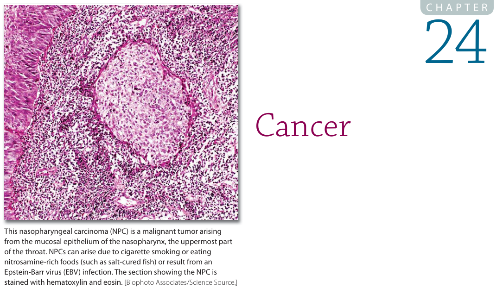
癌症每年导致美国约五分之一的死亡。在全球范围内，每10万人中每年有100至350人死于癌症。癌症源于通常控制细胞生长与增殖的机制发生故障。在正常发育过程中以及整个成年期，复杂的遗传控制系统根据生长信号、生长抑制信号和死亡信号，调节细胞出生与细胞死亡之间的平衡。细胞出生率和死亡率决定生长速率与成年个体的体型。在一些成体组织中，细胞增殖持续进行，作为一种恒定的组织更新策略。例如，肠上皮细胞仅存活几天便会死亡并被替换；某些白细胞的替换速度同样快，而皮肤细胞通常在脱落前只能存活2–4周。然而，许多成体组织中的细胞除愈合过程外通常不增殖。这类稳定细胞（如肝细胞、心肌细胞、神经元）可以长期保持功能，甚至持续整个生物体的生命。当维持正常增殖速率的机制发生故障、导致细胞分裂过度时，癌症便发生了。
导致大多数乃至全部癌症病例的细胞调控丧失，源自遗传损伤，而这种损伤往往由促肿瘤的化学物质、激素，有时还有病毒引起。三类广泛基因的突变已被认为与癌症的发生有关。原癌基因通常促进细胞生长；突变将其转变为癌基因，其产物在促进生长方面活性过强。癌基因突变通常导致基因表达增强，或产生过度活跃的基因产物。抑癌基因（tumor-suppressor gene）通常抑制生长，因此使其失活的突变会容许不恰当的细胞分裂。第三类常与癌症相关的基因称为基因组维护基因，参与维持基因组的完整性。当这些基因失活时，细胞以更高的速率获得额外的遗传改变，包括导致细胞生长与增殖失调并引发癌症的突变。这三类中的许多基因编码有助于调节细胞增殖（即进入细胞周期并在其中推进）或凋亡性细胞死亡的蛋白质；另一些则编码参与修复受损DNA的蛋白质。
这一形成癌症的过程称为癌变或肿瘤发生，是遗传与环境之间相互作用的结果。大多数癌症发生在基因被致癌化学物质（称为致癌物）改变之后，或发生在基因复制与修复出错之后。即使遗传损伤只发生在一个体细胞中，该细胞的分裂也会把损伤传递给其子细胞，从而产生一个改变细胞的克隆。然而，单个基因的突变很少会导致癌症发生。更典型的情况是，多个基因中一系列突变造就出一种增殖越来越快的细胞类型，它摆脱了正常的生长约束，并为更多突变创造了机会。这些细胞还会获得其他赋予它们优势的特性，例如能够脱离正常上皮，并刺激血管生长以获取氧气。最终，这个细胞克隆长成肿瘤。在某些情况下，原发瘤的细胞迁移到新部位，在那里形成继发瘤，这一过程称为转移。大多数癌症死亡是由侵袭性的、快速生长的转移瘤造成的。
时间在癌症中起着重要作用。一个细胞可能需要许多年才能积累形成肿瘤所需的多种突变，因此大多数癌症在生命较晚时期才发生。与由单次突变触发肿瘤发生的情况相比，需要多次突变这一点也降低了癌症的发生频率。然而，在我们的一生中，有数量极其庞大的细胞实际上经历了诱变并接受生长改变的检验，这是一种有利于这些被诱变细胞的强大选择，而在这种情况下，这种选择是我们不想要的。增殖迅速的细胞变得更丰富，经历进一步的遗传改变，并可能变得越来越危险。此外，癌症最常发生在生育年龄之后，因此对生殖成功率几乎没有影响。所以癌症很常见，部分反映了人类寿命的日益延长，但也反映了针对这种疾病缺乏选择压力。
在临床上，癌症常按其起源的胚胎组织进行分类。恶性肿瘤若来源于上皮，如内胚层（肠上皮）或外胚层（皮肤和神经上皮），则被归为癌；若来源于中胚层（肌肉、血液和结缔组织的前体细胞），则被归为肉瘤。癌是迄今为止最常见的恶性肿瘤类型（占90%以上）。大多数肿瘤是实性肿块，但白血病这一类肉瘤则以单个细胞的形式在血液中生长。（白血病这一名称源自拉丁语"白血"：白血病细胞的大量增殖可使患者的血液呈现乳白色。）
在本章中，我们首先介绍肿瘤细胞的特性，说明细胞稳态的每一个方面以及细胞与环境的相互作用在癌症中如何被改变。接着我们讨论癌症的起源，并描述导致恶性、常常是转移性癌症形成的演化过程。随后我们考虑导致癌细胞独特特征的一般遗传改变类型，以及体细胞突变与遗传性突变之间的相互作用。接下来的小节详细考察影响促生长和抑生长过程的突变如何导致细胞过度增殖。最后我们讨论细胞周期失调在癌症中的作用，以及基因组维护功能的崩溃如何促进肿瘤发生。
24.1 肿瘤细胞与正常细胞的差异
在详细考察癌症的遗传学基础之前，我们先来考虑肿瘤细胞区别于正常细胞的一般特性。从正常细胞转变为癌细胞通常涉及多个步骤，每一步都会增添一些特性，使细胞更有可能长成肿瘤。作为癌变基础的遗传改变会改变细胞的若干基本特性，使这些细胞得以逃避正常的生长控制，并最终赋予其完整的癌症表型（图24-1）。癌细胞获得了增殖的驱动力，这种驱动力不需要外部的诱导信号。它们无法感知限制细胞分裂的信号，并且在应当死亡时继续存活。它们常常改变与周围细胞或细胞外基质的附着，挣脱开来离开其起源组织。肿瘤的典型特征是缺氧（氧匮乏），因此要长到超过很小的体积，肿瘤必须获得血液供应。它们通常通过诱导血管长入肿瘤来做到这一点。随着癌症进展，肿瘤变成一个异常的器官，越来越适应生长和侵袭周围组织，并常常扩散到体内的远处部位。
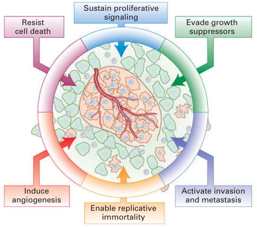
| Sustain proliferative signaling | 持续增殖信号 |
| Activate invasion and metastasis | 激活侵袭与转移 |
| Induce angiogenesis | 诱导血管生成 |
| Enable replicative immortality | 实现复制永生化 |
| Evade growth suppressors | 逃避生长抑制因子 |
| Resist cell death | 抵抗细胞死亡 |
在本节中，我们描述癌细胞的特性。我们首先讨论癌细胞遗传组成的改变，这些改变几乎影响所有细胞功能，使癌细胞得以逃避增殖调控并获得无限分裂的能力。然后我们将看到，肿瘤细胞中的遗传改变及其与环境的相互作用，如何帮助它摆脱曾经所属组织的约束，并使其能够侵袭邻近组织、在体内远处部位定植。
大多数癌细胞的遗传组成发生剧烈改变
在20世纪之交，David von Hansemann和Theodor Boveri首次记录了我们如今所知癌细胞的几乎普遍具有的一个特征：其整个遗传组成与正常细胞有剧烈差异。肿瘤带有各种类型的遗传改变——点突变，大小不等的扩增和缺失，易位，以及染色体数目的异常——通常数目过多，这种情况称为非整倍性（图24-2）。近来对许多人类肿瘤的测序，让人们了解了这些遗传改变在特定癌症中出现的频率，并鉴定出新型的突变机制。典型的癌细胞表现出整条染色体或染色体臂的获得与丢失，涉及其基因组的四分之一。局部扩增和缺失影响癌细胞基因组约10%的区域。对癌症的测序所揭示的最令人惊讶的结果，也许是不同癌症之间突变率的高度变异。儿童癌症中突变很少，替换率低至每兆碱基0.1个碱基改变，但在诱变剂诱导的癌症（如肺癌和黑色素瘤）中，这些比率可高达每兆碱基100个碱基改变。
DNA复制和染色体分离的错误可导致非整倍性以及染色体臂的获得与丢失。复制保真度下降和诱变剂也会深刻影响癌症基因组。除了这些已被充分确立的诱导基因组不稳定的机制外，癌症基因组测序还鉴定出其他新颖而不寻常的机制，它们导致了在人类癌症中观察到的剧烈基因组改变。人们已发现一种以易位断点附近多个碱基对替换为特征的超突变。这种剧烈的局部基因组改变被称为kataegis（源自希腊语"雷暴"），其机制尚不清楚，但可能涉及一种称为活化诱导脱氨酶（AID）的酶，该酶在抗体多样性产生中起关键作用，这将在第23章讨论。另一种极不寻常的突变机制见于2%–3%的人类癌症，但在侵袭性神经母细胞瘤（一种神经细胞肿瘤）中患病率高达18%，称为染色体碎裂。在这种机制中，整条染色体或其大部分被粉碎（希腊语thripsis意为"碎裂"），然后以看似随机的方式重新拼接起来，导致数十个、有时甚至数百个重排。单条染色体的这种粉碎与拼接，似乎发生在染色体或其部分未被纳入细胞核、而是形成自己的微核之时。在微核中复制效率较低，从而导致染色体断裂，并通过非同源末端连接以随机方式将染色体片段拼接起来；非同源末端连接是一种DNA修复形式，通过末端将DNA片段融合在一起。正如我们将在随后几节中看到的，癌细胞中发生的遗传改变几乎影响细胞稳态、增殖、组织构成和迁移特性的所有方面，也影响其在体内异位部位的存活与增殖。
癌细胞的细胞管家功能发生根本性改变
通过显微镜检查，通常可以把癌细胞与正常细胞区分开来。它们的分化程度通常不如正常细胞。癌细胞经常表现出快速生长细胞的特征：核质比高、核仁明显、分裂期细胞出现频率增加，以及特化结构相对较少。
肿瘤细胞与正常细胞的差异不仅在于外观，还在于其整个蛋白质组成。全基因组范围的基因表达和蛋白质组成分析显示，在迄今研究过的所有生物中，基因拷贝数的增加会导致基因表达的相应增加。（这一观察的显著例外是位于性染色体上的基因。）因此，癌细胞如此典型的基因组改变——整条染色体或染色体片段的丢失与获得——对细胞的蛋白质组成产生深远影响，从而影响大多数乃至全部细胞功能。这反过来又引起一种应激反应，旨在抵消癌细胞所经历的蛋白质失衡。例如，正是由于染色体组成发生剧烈改变，癌细胞的存活高度依赖蛋白质折叠和降解机制。癌细胞对其存活所依赖的蛋白质组维护通路的依赖性，使这些通路的组分成为有吸引力的药物靶点。
癌细胞的另一个显著特征是它们使用一种不寻常的能量生成机制。正常的分化细胞依靠线粒体氧化磷酸化来满足其能量需求。细胞通过三羧酸酸（TCA）循环氧化丙酮酸，将葡萄糖代谢为二氧化碳（见第12章）。只有在无氧条件下，正常细胞才进行无氧糖酵解并产生大量乳酸。然而，大多数癌细胞无论氧水平高低，都依赖糖酵解来产生能量（图24-3）。即使在有氧的情况下也利用糖酵解产生能量，这种过程称为有氧糖酵解，由生物化学家Otto Warburg最早在癌细胞中发现，因此被称为Warburg效应。葡萄糖代谢为乳酸，每分子葡萄糖仅产生2分子ATP，而氧化磷酸化每分子葡萄糖可产生多达36分子ATP。
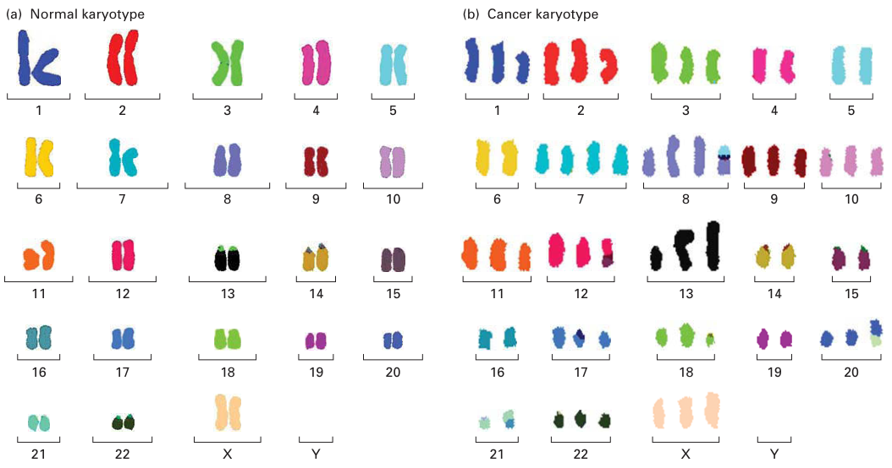
| Normal karyotype | 正常核型 |
| Cancer karyotype | 癌细胞核型 |
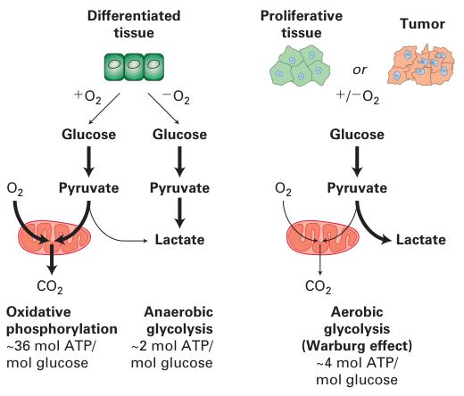
| Glucose | 葡萄糖 |
| Pyruvate | 丙酮酸 |
| Lactate | 乳酸 |
| Anaerobic glycolysis | 无氧糖酵解 |
| Aerobic glycolysis (Warburg effect) | 有氧糖酵解（Warburg效应） |
| Oxidative phosphorylation | 氧化磷酸化 |
| Differentiated tissue | 分化组织 |
| Tumor or Proliferative tissue | 肿瘤或增殖组织 |
不过，细胞可以利用糖酵解的中间产物来合成大分子和脂质。因此，葡萄糖代谢的重塑可以提供维持癌细胞大分子生物合成和增殖所需的燃料。
癌细胞不仅重塑其代谢通路，某些癌症类型还会产生在疾病中起关键作用的新型代谢物。70%的胶质母细胞瘤、少突胶质细胞瘤和星形细胞瘤（均为脑癌）以及约25%的急性髓系白血病带有异柠檬酸脱氢酶（IDH）突变，IDH是一种TCA循环酶，将异柠檬酸转化为α-酮戊二酸（图24-4）。在这些癌症中发现的IDH突变使该酶将异柠檬酸转化为一种新的代谢物——2-羟基戊二酸，它在癌细胞中积累到高达5–35 mM的水平！那么2-羟基戊二酸如何促进肿瘤发生？它抑制若干需要α-酮戊二酸才能行使功能的酶，包括调节组蛋白甲基化状态的蛋白质。通过这种方式，2-羟基戊二酸改变基因表达。2-羟基戊二酸究竟是癌症特异性代谢物的唯一例子，还是一类新的肿瘤代谢物中的第一个，仍有待观察。
不受控制的增殖是癌症的普遍特征
在正常组织中，细胞增殖是一个受到严格调控的过程。促生长因子以高度受控的方式释放，以确保细胞增殖仅用于补充组织。癌细胞演化出了逃避这些严格控制的机制。正如第24.4节将详细讨论的，癌细胞上调促生长通路，同时下调抑生长和细胞死亡通路。通过这种方式，癌细胞获得了持续增殖的能力。这种能力导致癌细胞群体的扩增。我们将会看到，针对导致不受控制增殖的突变进行选择性靶向，是治疗某些类型癌症的一种非常成功的方法。
促增殖信号的增加和抑增殖信号的减少，并不是赋予癌细胞无限增殖能力的唯一变化。在癌细胞增殖的全过程中，染色体末端需要受到保护。端粒是线性染色体物理上的末端（第8章讨论过），由一种短DNA序列的串联重复构成，在脊椎动物中该序列为TTAGGG。端粒酶是一种含有RNA模板的逆转录酶，它反复向染色体末端添加TTAGGG重复序列，以延长或维持装饰人类染色体末端的那段3–20 kb的重复区域。胚胎细胞、生殖系细胞和干细胞产生端粒酶，但大多数人类体细胞在进入S期时只产生少量端粒酶。由于其端粒酶活性不高，它们的端粒随每个细胞周期而缩短。端粒的广泛缩短被细胞识别为双链断裂，从而触发细胞周期阻滞和凋亡。肿瘤细胞通过产生端粒酶来克服这一命运。许多研究者认为，端粒酶表达对肿瘤细胞变得永生化是必需的。事实上，将产生端粒酶的转基因导入原本缺乏该酶的培养人类细胞，可在维持端粒长度的同时将其寿命延长20次以上的倍增。许多癌症对端粒酶活性升高的依赖，使一些研究者提出端粒酶抑制剂可能是非常有效的癌症治疗剂。
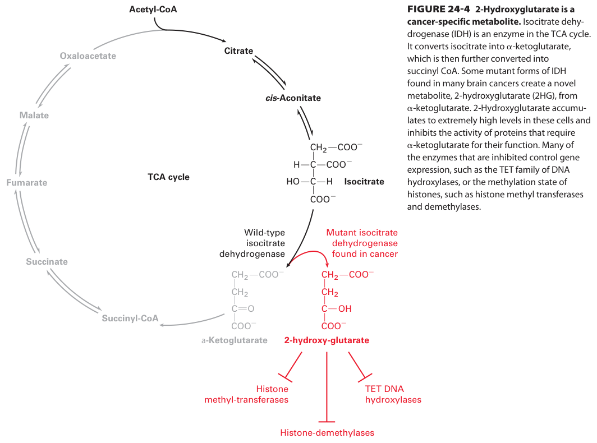
| Wild-type isocitrate dehydrogenase | 野生型异柠檬酸脱氢酶 |
| Mutant isocitrate dehydrogenase found in cancer | 癌症中发现的突变型异柠檬酸脱氢酶 |
| Acetyl-CoA | 乙酰CoA |
| Citrate | 柠檬酸 |
| Isocitrate | 异柠檬酸 |
| α-Ketoglutarate | α-酮戊二酸 |
| Succinyl-CoA | 琥珀酰CoA |
| Succinate | 琥珀酸 |
| Oxaloacetate | 草酰乙酸 |
| TCA cycle | TCA循环 |
| 2-hydroxyglutarate | 2-羟基戊二酸 |
| Histone methyltransferases | 组蛋白甲基转移酶 |
| Histone demethylases | 组蛋白去甲基化酶 |
| TET DNA hydroxylases | TET DNA羟化酶 |
癌细胞摆脱组织的束缚
正常细胞在接触其他细胞时停止生长，最终形成一层排列有序的细胞（图24-5a）。癌细胞的黏附性较低，形成可在显微镜下辨识的三维细胞团（灶）（图24-5b）。这种对组织结构的束缚的丧失可以在体外建模。称为3T3细胞的培养小鼠成纤维细胞，在接触其他细胞时通常停止生长，最终形成一层排列有序的已停止增殖、处于细胞周期静息（G0期）状态的细胞（见图24-5a）。当把人类膀胱癌细胞的DNA转染进培养的3T3细胞时，约百万分之一的细胞会整合外源DNA的某个特定片段，从而引起表型改变（见经典实验24-1）。受影响细胞的后代比周围的正常细胞更圆，彼此之间以及与培养皿之间的黏附性也更低（见图24-5b）。在接触其他细胞时不停止分裂的细胞，被认为不再具有"接触抑制"，并且已经历了致癌转化。近来的研究已将E-cadherin等黏附分子、细胞极性因子、肌动蛋白细胞骨架调节因子以及Hippo通路，与建立细胞-细胞接触时介导的细胞周期阻滞联系起来。然而，这一过程的确切机制，以及这些通路在癌症中如何被破坏，仍有待阐明。
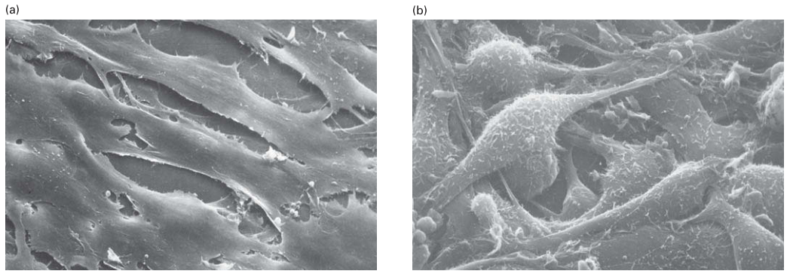
肿瘤是由其环境塑造的异质性器官
并非所有肿瘤都由均一的细胞组成，即使它们起源于单个起始细胞。例如，在某些类型的肿瘤中，只有某些被称为癌症干细胞的肿瘤细胞能够播种出新的肿瘤。在这些肿瘤内部，一些细胞停止分裂，而另一些则能继续癌性生长。后者当然最危险，也最需要通过抗癌治疗予以消灭。癌症干细胞被认为会产生一些复制能力强的细胞和另一些复制潜能较为有限的细胞。这些癌症干细胞的来源尚不清楚。在某些癌症中，正常的组织干细胞可能产生癌症干细胞。在另一些癌症中，终末分化细胞去分化形成祖细胞，可能由此产生癌症干细胞。无论其来源如何，癌症干细胞与正常组织干细胞共享基因表达特征，因而被称为干细胞样细胞。
肿瘤的邻近环境——肿瘤微环境——促成肿瘤内细胞的异质性，影响癌症干细胞乃至一般肿瘤细胞的行为。有些邻近细胞可能比其他细胞更有利于肿瘤生长。肿瘤微环境的重要性还延伸到对肿瘤细胞最常见的一种环境影响：炎性细胞。如今人们普遍接受，免疫系统的细胞会与肿瘤相互作用。CD8+细胞毒性T淋巴细胞和自然杀伤细胞包围并常常迁移进入肿瘤，在那里它们被认为抑制肿瘤形成。缺乏这些免疫系统组分及其他组分的突变小鼠比正常小鼠更容易发生致癌物诱导的肿瘤。这些发现引出一个观点：免疫系统能清除癌细胞。癌细胞如何逃避免疫监视，是一个尚待解决的关键问题。
越来越多的证据表明，免疫系统的细胞也可能具有致瘤特性。长期以来人们就知道，癌症常常发生在损伤或慢性感染部位。据估计，多达20%的癌症与慢性感染有关。例如，持续的幽门螺杆菌感染与胃癌相关。克罗恩病是一种影响肠道的自身免疫病，与结肠癌相关。感染乙型或丙型肝炎病毒会增加一种肝癌——肝细胞癌——的风险。免疫系统细胞迁移到损伤或感染部位并产生生长因子，从而刺激肿瘤细胞增殖。它们还产生诱导血管生长的因子，正如我们接下来要讨论的，这是肿瘤生长和向远处部位播散的一个重要方面。
肿瘤生长需要形成新的血管
肿瘤必须募集新的血管才能长到很大的体积。在没有血液供应的情况下，肿瘤只能长到约10^6个细胞的团块，大致是一个直径2 mm的球体。此时，肿瘤团块外部细胞的分裂与中央细胞因营养供应不足而死亡达到平衡。这类肿瘤除非分泌激素，否则很少引起问题。然而，大多数肿瘤会诱导新血管形成，这些血管侵入肿瘤并为其提供营养，这一过程称为血管生成。这一复杂过程需要几个独立的步骤：降解邻近毛细血管周围的基膜，使衬于毛细血管的内皮细胞迁移进入肿瘤，这些内皮细胞分裂，以及在新延长的毛细血管周围形成新的基膜。
许多肿瘤产生刺激血管生成的生长因子；另一些肿瘤则以某种方式诱导周围的正常细胞合成并分泌这类因子。碱性成纤维细胞生长因子（β-FGF）、转化生长因子α（TGF-α）和血管内皮生长因子（VEGF）均由许多肿瘤分泌，都具有促血管生成的特性。新的血管使肿瘤得以增大体积，从而增加发生更多有害突变的概率。邻近血管的存在也促进转移过程。
VEGF受体是酪氨酸激酶，调节血管生长的若干方面，如内皮细胞的存活与生长、内皮细胞迁移以及血管壁通透性。VEGF表达可由癌基因和缺氧诱导，缺氧定义为氧分压低于7 mmHg。缺氧信号由缺氧诱导因子1（HIF-1）介导，这是一种在低氧条件下被激活的转录因子，它结合并诱导VEGF基因及约30个其他基因的转录，其中许多基因可影响肿瘤生长的概率。HIF-1的活性由一个氧感受器控制，该感受器由脯氨酰羟化酶组成，在正常O2水平下有活性，而在缺乏O2时失活。HIF-1的羟化导致该转录因子泛素化并被降解，这一过程在O2低时被阻断。抑制血管生成的化合物作为潜在治疗剂引起了很大兴趣，但它们在临床上的成功迄今有限。
侵袭和转移是肿瘤发生的晚期阶段
肿瘤发生的频率很高，尤其是在老年人中，但大多数对宿主几乎没有风险，因为它们体积小且局限。我们把这类肿瘤称为良性的；疣就是一个例子，它是一种良性皮肤肿瘤。构成良性肿瘤的细胞与正常细胞非常相似，功能也可能与正常细胞一样。将组织结合在一起的细胞黏附分子使良性肿瘤细胞像正常细胞一样，局限在其起源的组织中。纤维性包膜通常勾勒出良性肿瘤的范围，使其成为外科医生容易处理的目标。良性肿瘤只有在其实体体积干扰正常功能，或分泌过量生物活性物质（如激素）时，才会成为严重的医学问题。例如，当良性垂体瘤导致生长激素过量产生时，可发生肢端肥大症，即头部、手和足过度生长。
与良性肿瘤细胞相反，恶性肿瘤细胞能够侵袭邻近组织，在细胞持续增殖的同时扩散并播散出更多肿瘤（图24-6）。这一能力是区分恶性肿瘤与良性肿瘤的一个主要特征。某些恶性肿瘤，如卵巢或乳腺的肿瘤，至少在一段时间内保持局限并有包膜。然而，当这些肿瘤进展时，细胞便侵袭周围组织并发生转移（图24-7a）。
正常细胞通过细胞-细胞黏附以及物理屏障（如基膜）被限制在器官或组织中的特定位置，基膜位于上皮细胞层下方，也包围血管的内皮细胞（见第20章）。相比之下，癌细胞已获得穿透基膜的能力——它利用一种称为侵袭伪足的细胞突起——并能迁移到体内远处部位（图24-7b）。一种称为上皮-间质转化（EMT）的发育过程，被认为在某些癌症的转移过程中起关键作用。在正常发育中，上皮细胞转变为间质细胞是某些器官和组织形成的一个步骤。EMT需要基因表达模式的明显改变，并导致细胞形态的根本变化，如细胞-细胞黏附丧失、细胞极性丧失，以及获得迁移和侵袭特性。在转移过程中，EMT调控通路被认为在肿瘤的侵袭前沿被激活，产生单个迁移细胞。EMT的核心是两个转录因子Snail和Twist。这些转录因子促进参与细胞迁移的基因表达，触发E-cadherin等细胞黏附因子的下调，并增加消化基膜的蛋白酶的产生，从而使肿瘤细胞能够穿透基膜。例如，许多肿瘤细胞分泌一种蛋白质（纤溶酶原激活物），将血清蛋白纤溶酶原转化为有活性的蛋白酶纤溶酶。重要的是，许多EMT的重要驱动因子（如SNAIL1和SNAIL2）的表达，已被证明与多种癌症（包括乳腺癌、结肠癌和卵巢癌）的疾病复发和患者生存期缩短相关。EMT的发生预示着不良的临床结局。
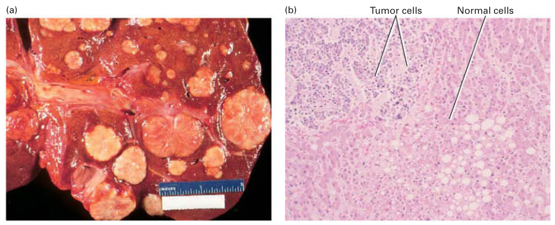
| Tumor cells | 肿瘤细胞 |
| Normal cells | 正常细胞 |
随着基膜解体，一些肿瘤细胞进入血流，但从原发瘤逃逸的细胞中，不到万分之一能存活下来并在另一组织中定植、形成继发性转移瘤。目前，预防医学的很大一部分工作集中于开发识别血液中循环的罕见肿瘤细胞的方法。捕获这些循环肿瘤细胞的能力，不仅能提供一种强大而无创的癌症早期检测工具，而且对它们的分析可以提供关于该疾病本质的洞见，并指导治疗。
为了产生转移，肿瘤细胞不仅必须进入血流，还必须黏附到新位置血管的内衬上，并穿过它迁移进入下方的组织，这一过程称为外渗（见第20章）。为了在远处部位播散出转移灶，肿瘤细胞不仅必须播散，还必须适应异质的组织环境。至少在初期，转移性肿瘤细胞可能尚未很好地适应其新环境，但据认为它们会演化出在异质环境中存活并繁衍的能力。关于促进这种适应的分子通路所知甚少，但越来越多的证据表明，某些环境比其他环境更有利于癌细胞定植。
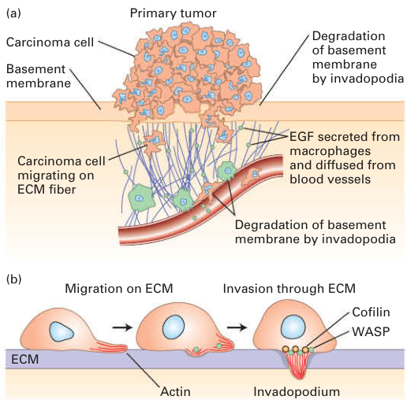
| Primary tumor | 原发瘤 |
| Carcinoma cell | 癌细胞 |
| Carcinoma cell migrating on ECM fiber | 在ECM纤维上迁移的癌细胞 |
| EGF secreted from macrophages and diffused from blood vessels | 由巨噬细胞分泌并从血管扩散而来的EGF |
| Migration on ECM | 在ECM上迁移 |
| Invasion through ECM | 穿透ECM的侵袭 |
| Invadopodium | 侵袭伪足 |
| Degradation of basement membrane by invadopodia | 侵袭伪足对基膜的降解 |
| Cofilin | 切丝蛋白 |
| Actin | 肌动蛋白 |
| Basement membrane | 基膜 |
| ECM | 细胞外基质 |
由于转移是与癌症相关的发病和死亡最常见的原因，人们投入了大量精力去理解哪些肿瘤会变成转移性的以及转移是如何发生的。传统上，肿瘤细胞和正常细胞的特性一直用显微镜工具来评估，许多肿瘤的预后可以在一定限度内根据其组织学来确定。然而，仅凭细胞的外观所携带的信息有限，因此需要更好的方法来辨别细胞的特性，这既是为了理解肿瘤发生，也是为了就预后和治疗做出有意义且准确的决策。评估肿瘤的RNA、蛋白质、脂质和代谢物产生模式的方法的出现，使人们能够更详细地检查肿瘤特性。毫不奇怪，原发瘤往往可通过其所产生的RNA和蛋白质与转移瘤区分开来。对基因表达全局模式的分析（第6章描述过）如今已被常规用于预测患者结局并为许多类型的癌症确定最佳治疗方案，而且它们很快就会成为确定治疗选择的标准。
- 大多数癌细胞的基因组发生剧烈改变，从点突变到缺失和扩增，再到整条染色体的获得与丢失。这些遗传组成的变化几乎影响所有细胞功能。
- 不受控制的增殖和摆脱起源组织的束缚，是癌细胞的两个普遍特征。
- 肿瘤是由不同细胞类型构成的复杂器官，这些细胞与环境相互作用以获得最大的生长优势。
- 原发瘤和继发瘤都需要血管生成，即新血管的形成，才能长成大的瘤块。
- 癌细胞有时会侵袭周围组织，常常突破界定组织边界的基膜，并在全身播散以建立继发性生长区域，这一过程称为转移。
- 转移性肿瘤细胞在称为上皮-间质转化的过程中获得迁移特性。
24.2 癌症的起源与发展
肿瘤起源于单个细胞，这些细胞获得了在邻近细胞无法增殖时进行增殖的能力。随后发生一系列演化步骤，癌细胞借此获得逃脱其所起源组织束缚的手段，得以在体内循环系统中存活，并最终定植于远处部位。本节中，我们考察肿瘤发生的过程。我们首先探讨致癌物如何诱导肿瘤发生。接着我们引入一个称为癌症多次打击模型的假说，它不仅能解释该疾病的多步骤进程，还能解释癌症在很大程度上是一种老年疾病这一事实。最后，我们通过讨论细胞模型与小鼠模型来结束本节，这些模型在阐明肿瘤发生的分子基础方面发挥了重要作用。
致癌物通过损伤DNA诱导癌症
化学致癌物诱导癌症的能力，既源于它们造成的DNA损伤，也源于细胞在努力修复这些损伤的过程中引入DNA的错误。因此致癌物同时也是诱变剂。致癌物通过诱变作用起效的最有力证据，来自这样一个观察：因细胞暴露于致癌物而改变了的细胞DNA，能够把培养细胞或植入小鼠的细胞转变为快速生长的类癌细胞。一种致癌物的诱变效应，大致与其转化细胞以及在动物模型中诱导癌症的能力成正比。
尽管被鉴定为化学致癌物的物质具有范围广泛的化学结构，且没有明显统一的特征，但它们可以分为两大类。直接致癌物数量很少，主要是反应性亲电试剂（即寻找并与其他化合物中富电子中心发生反应的化合物）。通过与DNA中的氮原子和氧原子发生化学反应，这些化合物能够修饰DNA中的碱基，从而扭曲正常的碱基配对模式。如果被修饰的核苷酸未被修复，它们就会在复制过程中允许一个不正确的核苷酸被掺入。这类致癌物包括甲磺酸乙酯（EMS）、硫酸二甲酯（DMS）和氮芥。
相比之下，间接致癌物一般是不具反应性的、常常不溶于水的化合物，只有在引入亲电中心之后才能充当强效的癌症诱导物。在动物体内，细胞色素P-450酶位于大多数细胞的内质网中，在肝细胞中水平尤其高。P-450酶的正常功能是向非极性的外源化学物质（如某些杀虫剂和治疗药物）添加亲电中心（如OH基团），以便使其增溶，从而能够被排出体外。然而，P-450酶也能把本来无害的化学物质变成致癌物。事实上，大多数化学致癌物在被细胞酶修饰之前几乎没有诱变效应。
某些致癌物已被与特定癌症联系起来
在人们最初认识癌症的年代，就已经清楚至少有些癌症是由环境毒物引起的。例如，1775年有报道称，烟囱清扫工接触烟灰会导致阴囊癌；1791年有报道称，使用鼻烟（烟草）与鼻腔癌相关。环境化学物质最初是通过动物实验研究与癌症联系起来的。经典实验是反复将待测物质涂在小鼠背部，观察动物是否出现局部或全身性肿瘤。正是这类检测方法，使人们于1933年从煤焦油中纯化出一种纯的化学致癌物——苯并(a)芘。
辐射在损伤染色体中的作用，最早是在20世纪20年代用经γ射线照射的果蝇证实的。后来，辐射引发人类癌症（尤其是白血病）的能力得到了戏剧性的展示：第二次世界大战中投下的原子弹的幸存者中白血病发病率升高（电离辐射），以及较近期过多暴露于阳光的个体中黑色素瘤（皮肤癌）增多（紫外辐射）。
尽管化学致癌物被认为是许多人类癌症的风险因素，但仅在少数情况下确立了与特定癌症的直接联系，其中最重要的是肺癌以及与吸烟相关的其他癌症（喉、咽、胃、肝、胰腺、膀胱、宫颈等部位的癌症）。流行病学研究（图24-8）最先表明，吸烟是肺癌的主要原因，但其原因一直不清楚，直到发现约60%的人类肺癌含有p53基因的失活性突变——正如我们很快将会看到的，p53是一个主要的抑癌基因。苯并(a)芘这种化学物质既存在于香烟烟雾中，也存在于煤焦油中，它在肺部经过代谢活化（图24-9），形成一种强效诱变剂，主要导致鸟嘌呤（G）碱基转变为胸腺嘧啶（T）碱基，即颠换突变。当作用于培养的支气管上皮细胞时，活化后的苯并(a)芘诱导许多突变，包括p53基因第175、248和273位密码子上的失活性突变。这些相同的位置都位于该蛋白的DNA结合结构域内，是人类肺癌中的主要突变热点。事实上，肿瘤细胞中发现的p53（以及其他癌症相关基因）突变性质，为我们提供了关于癌症起源的线索。例如，由苯并(a)芘引起的G→T颠换，存在于约三分之一吸烟者肺肿瘤的p53基因中。这类突变在其他类型肿瘤的p53突变中相对罕见。致癌物留下了自己的足迹。因此，香烟烟雾中一种明确的化学致癌物与人类癌症之间存在强烈的相关性。香烟烟雾中的其他化学物质很可能也在其他基因中诱导突变，因为其中含有60多种致癌物。
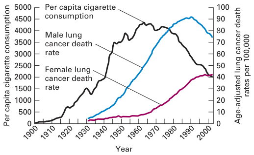
| Per capita cigarette consumption | 人均香烟消费量 |
| Female lung cancer death rate | 女性肺癌死亡率 |
| Male lung cancer death rate | 男性肺癌死亡率 |
| Year | 年份 |
| Age-adjusted lung cancer death rates per 100,000 | 每10万人的年龄校正肺癌死亡率 |
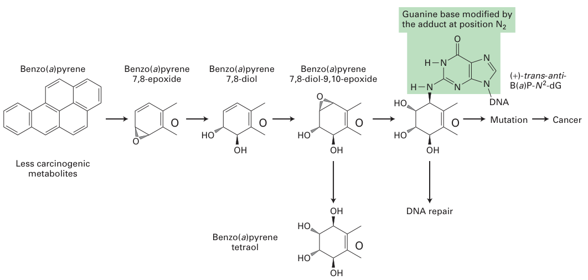
| Benzo(a)pyrene | 苯并(a)芘 |
| Benzo(a)pyrene 7,8-epoxide | 苯并(a)芘-7,8-环氧化物 |
| Benzo(a)pyrene 7,8-diol | 苯并(a)芘-7,8-二醇 |
| Benzo(a)pyrene tetraol | 苯并(a)芘四醇 |
| Benzo(a)pyrene 7,8-diol-9,10-epoxide | 苯并(a)芘-7,8-二醇-9,10-环氧化物 |
| Less carcinogenic metabolites | 致癌性较低的代谢物 |
| Guanine base modified by the adduct at position N2 | 在N2位被加合物修饰的鸟嘌呤碱基 |
| DNA repair | DNA修复 |
| Mutation | 突变 |
| Cancer | 癌症 |
肺癌并不是唯一一种已经确定明确风险因素的主要人类癌症。接触石棉与间皮瘤（另一种肺癌）相关。黄曲霉毒素是一种存在于发霉谷物中的真菌代谢物，可诱导肝癌。此外，高温烹调肉类会引起化学反应，形成杂环胺（HCA），这是一类强效诱变剂，能在动物模型中引起结肠癌和乳腺癌。然而，关于有助于我们避免其他常见癌症（如乳腺癌、结肠癌、前列腺癌和白血病）的饮食与环境风险因素，一般都缺乏确凿证据。
多次打击模型可以解释癌症的进展
正如我们刚刚看到的，突变会引起癌症。不过，对我们来说幸运的是，通常需要多个突变才能把一个正常的机体细胞转变成恶性细胞。根据这一多次打击模型，癌症是通过一种演化性（或者说"适者生存"式）克隆选择过程产生的，这与在大种群中对个体动物的选择颇为相似。以下是一种设想的情形，它可能适用于也可能不适用于所有癌症：一个细胞中的某个突变使它获得了轻微的生长优势。它的一个子代细胞随后发生第二个突变，使其后代能够更不受控制地生长，形成一个小型良性肿瘤。该肿瘤内某个细胞发生的第三个突变，使它能够超越其他细胞生长，并克服肿瘤微环境施加的限制，其子代形成一团细胞，其中每一个都具有这三处遗传改变。这些细胞中某一个细胞发生的又一个突变，使其后代得以逃逸进入血流，并在其他部位建立起子代集落——这正是转移性癌症的标志。
这一模型做出两个易于检验的预测。第一，给定肿瘤中的所有细胞应当至少有一些共同的遗传改变。对来自个体人类肿瘤的细胞进行的系统分析，支持了肿瘤中所有细胞都源自单个祖细胞这一预测。第二，癌症发病率应当随年龄增长而升高，因为所需要的多个突变可能需要数十年才能发生。假设一生中突变速率大致恒定，那么如果只需一个突变就能把正常细胞转变为恶性细胞，大多数类型癌症的发病率就应当与年龄无关。正如图24-10中的数据所示，许多类型人类癌症的发病率随年龄急剧上升。事实上，目前的估计提示，当最危险的癌细胞出现时，必须累积五到六次"打击"，即突变。
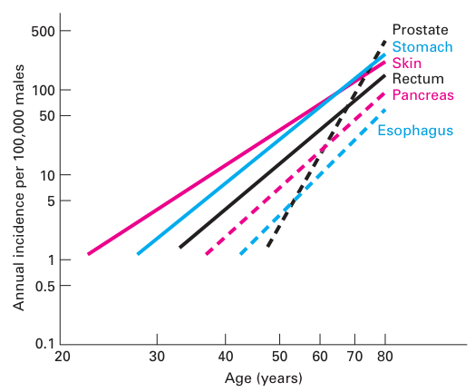
| Annual incidence per 100,000 males | 每10万男性的年发病率 |
| Age (years) | 年龄（岁） |
| Prostate | 前列腺 |
| Stomach | 胃 |
| Skin | 皮肤 |
| Rectum | 直肠 |
| Pancreas | 胰腺 |
| Esophagus | 食管 |
更多直接证据表明肿瘤诱导需要多个突变，这些证据来自转基因小鼠实验，这类实验显示，多种癌基因组合能够协同作用引起癌症。例如，人们已经培育出携带突变型rasV12显性癌基因（rasD的一种形式）或MYC原癌基因的小鼠，两者都各自处于来自逆转录病毒的乳腺细胞特异性启动子/增强子的控制之下。该启动子受内源性激素水平和组织特异性调控因子的诱导，从而导致乳腺组织中MYC或rasV12的过表达。
MYC蛋白是一种转录因子，可诱导许多细胞周期从G1期向S期转变所需的基因表达。这些小鼠中MYC转录的增强，模拟了此前已鉴定的、能增加MYC转录从而使原癌基因转变为癌基因的致癌性突变。单独来看，MYC转基因要到100天后才引起肿瘤，而且只在少数小鼠中引起；显然，在过量产生MYC蛋白的乳腺细胞中，只有极微小的一部分真正变为恶性。仅产生突变型RasV12蛋白会使肿瘤更早出现，但仍然缓慢，150天内效率约为50%。然而，当把过表达MYC和rasV12的转基因小鼠杂交时，其子代中所有乳腺细胞都会同时过量产生MYC与RasV12，肿瘤出现得快得多，所有动物都死于癌症（图24-11）。这类实验强调了多个癌基因的协同效应。它们还提示，即使在双转基因小鼠中也能见到的肿瘤形成的长潜伏期，是由于还需要获得更多的突变。
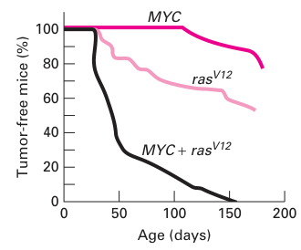
| Tumor-free mice (%) | 无肿瘤小鼠（%） |
| Age (days) | 年龄（天） |
在结肠癌中可以追踪到相继发生的致癌突变
对结肠癌的研究为癌症诱导的多次打击模型提供了迄今最有力的证据。外科医生能够获取许多人类癌症相当纯的样本，但由于肿瘤只在某一个时间点被观察到，其确切进展阶段不易确定。结肠癌是一个例外，它通过界限分明、特征明确的形态学阶段演化。它的中间阶段——息肉、良性腺瘤和癌——可由外科医生分离获得，从而使发生于每个阶段的突变得以被鉴定。大量研究表明，结肠癌源于一系列通常以明确界定的顺序发生的突变，为多次打击模型提供了有力支持（图24-12）。
对结肠癌进展的洞见，最初来自对结肠癌遗传性易感性的研究，如家族性腺瘤性息肉病（FAP）。在许多这类综合征中都鉴定出了Wnt信号通路的突变，现在人们认为，Wnt信号的失调会导致结肠壁内侧形成息肉（癌前生长物）——这不仅发生在患有遗传性息肉病综合征的人中，也发生在罹患散发型（非遗传性）结肠癌的人中。APC（结肠腺瘤性息肉病）蛋白是一种负向Wnt信号的调控因子（见第16章），它通过激活MYC基因的表达来促进细胞周期进入。因此，功能性APC蛋白的缺失会导致MYC的不适当产生，而APC突变纯合的细胞则以高于正常的速率增殖并形成息肉。APC基因的功能丧失性突变是结肠癌早期阶段最常见的突变。息肉中的大多数细胞都含有相同的、导致APC基因丢失或失活的一两处突变，这表明它们是发生最初突变的那个细胞的克隆。因此，APC是一个抑癌基因；要形成息肉，APC基因的两个等位基因都必须携带失活性突变，因为带有一个野生型APC等位基因的细胞所表达的APC蛋白足以使其正常发挥功能。
如果息肉中的某个细胞发生又一突变，这次是ras基因的激活突变，其子代便会以更加不受控制的方式分裂，形成一个更大的腺瘤。随后发生p53基因的失活，导致正常调控逐渐丧失，随之形成恶性癌（见图24-12）。p53蛋白是一种抑癌因子，它响应DNA损伤和其他应激而阻止细胞周期推进。虽然这里列出的三次"打击"确实是全貌中至关重要的部分，但很可能还有额外的、起作用的遗传事件。然而，并非每一种结肠癌都会获得所有后期的突变，也并非都按图24-12所描绘的顺序获得这些突变。因此，不同的突变组合可能产生相同的表型。
来自不同人类结肠癌的DNA一般都含有这里提到的全部三个基因的突变——抑癌基因APC和p53的功能丧失性突变，以及癌基因K-ras（ras家族基因之一）的激活（功能获得性）突变——这确立了癌症的形成需要同一细胞中发生多个突变。这些突变中，有些似乎在肿瘤发展的早期阶段赋予生长优势，而另一些突变则促进后期阶段，包括恶性表型所必需的侵袭和转移。结肠癌进展所需的突变数目乍看可能令人惊讶，似乎是对肿瘤发生的有效屏障。然而，我们的基因组始终处于持续的攻击之下。近期的估计表明，散发出现的息肉在每个细胞中约有11,000处遗传改变，但很可能其中只有少数改变与癌变有关。作为癌细胞标志的基因组不稳定性会促进肿瘤进一步演化，使得能够加速产生自我依赖性增强、且具备转移能力的肿瘤细胞。
结肠癌为癌症的多次打击模型提供了一个极好的例证。该模型在多大程度上普遍适用于癌症，目前才刚刚开始被认识，但很清楚的是，许多类型的癌症都涉及多个突变。
癌症的发展可以在培养细胞和动物模型中进行研究
大多数培养细胞具有有限的寿命（见第4章）。经过约50次分裂后，人类细胞停止分裂，并最终因其端粒的侵蚀而死亡（见图4-1a）。然而，有些细胞逃脱了这一命运，变为永生化；也就是说，它们获得了无限分裂的能力。永生化由若干种突变所介导，包括功能丧失性突变，发生在p19ARF或p53基因中，这两个基因是细胞周期和细胞存活的调控因子。如果定期稀释并供给营养，这些突变可使细胞在培养中无限期生长（见图4-1b）。
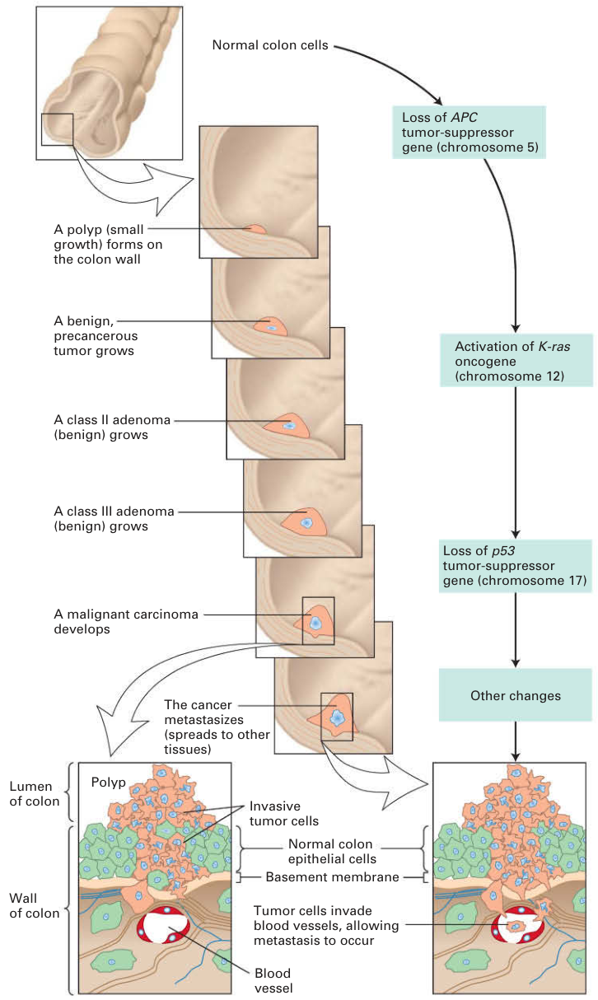
| Loss of APC tumor-suppressor gene (chromosome 5) | APC抑癌基因丢失（5号染色体） |
| A polyp (small growth) forms on the colon wall | 结肠壁上形成息肉（小的生长物） |
| A benign, precancerous tumor grows | 良性的癌前肿瘤生长 |
| Activation of K-ras oncogene (chromosome 12) | K-ras癌基因激活（12号染色体） |
| Loss of p53 tumor-suppressor gene (chromosome 17) | p53抑癌基因丢失（17号染色体） |
| Other changes | 其他改变 |
| A malignant carcinoma develops | 恶性癌发生 |
| Invasive tumor cells | 侵袭性肿瘤细胞 |
| Normal colon epithelial cells | 正常结肠上皮细胞 |
| Basement membrane | 基膜 |
| Blood vessel | 血管 |
| Wall of colon | 结肠壁 |
| The cancer metastasizes (spreads to other tissues) | 癌症转移（扩散到其他组织） |
| Tumor cells invade blood vessels, allowing metastasis to occur | 肿瘤细胞侵入血管，使转移得以发生 |
永生化细胞并不是完全成型的癌细胞。当把它们导入免疫缺陷小鼠时，它们不能形成肿瘤。然而，当引入进一步的致癌性突变时，它们就转变为癌细胞。例如，当把编码rasD（Ras蛋白的一种高活性形式）的突变型ras基因导入永生化细胞时，它们便被转化为癌细胞。正如我们将在24.3节中看到的，任何编码能使永生化细胞转变为癌细胞的蛋白的基因，如rasD，都被认为是癌基因。细胞培养实验不仅让我们洞悉癌基因如何引起癌症，也支持了把一个正常细胞转变为癌细胞需要多次打击的观点。
基因工程小鼠也为肿瘤起始和进展的各个步骤提供了大量洞见。然而，利用小鼠模型研究癌症并不总是那么直接了当。许多抑癌基因在小鼠正常发育过程中承担着必不可少的功能，因此缺少这两个基因拷贝的小鼠无法存活。这些基因在早期胚胎发生中的必需功能，妨碍了对它们在肿瘤进展中作用的研究。为了规避这一问题，研究人员开始采用条件性"敲入"和"敲除"策略，从而能够在特定组织或特定发育阶段对某个基因进行靶向激活或失活。
在条件性小鼠模型中，某个特定癌基因或抑癌基因的等位基因在以外源化学物质或病毒按组织特异性或时间特异性方式被激活或失活之前，都是野生型。这些条件性系统的核心是Cre和FLP重组酶。这两种重组酶分别促进loxP位点之间和FRT位点之间的同源重组（图24-13；另见图6-39）。当重组酶处于组织特异性启动子的控制之下时，重组仅发生在产生该重组酶的组织中。重组酶方法有两种用法。第一，重组酶的靶位点可以位于一个外显子的两侧。一旦诱导重组酶，该外显子即被切除，基因随之失活（图24-13a）。这种方法对于以组织特异性方式使抑癌基因失活特别有用。第二，可以通过向癌基因中引入一个含有终止密码子的额外外显子来控制癌基因的表达，这会使该基因失去功能。然而，如果该额外外显子的两侧有重组酶靶位点，那么在诱导重组酶后癌基因就会被表达（图24-13b）。利用这一系统，研究人员在小鼠中检验了Ras的致癌形式的作用，并利用一个条件性致癌ras等位基因，创建了人类肺癌的小鼠模型。
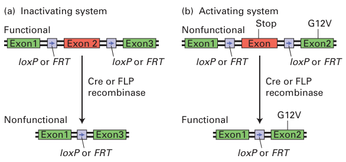
| (a) Inactivating system | （a）失活系统 |
| (b) Activating system | （b）激活系统 |
| Cre or FLP recombinase | Cre或FLP重组酶 |
| loxP or FRT | loxP或FRT |
| Exon 1 | 外显子1 |
| Exon 2 | 外显子2 |
| Exon 3 | 外显子3 |
| Functional | 有功能 |
| Nonfunctional | 无功能 |
| Stop | 终止 |
| FRT | FLP重组靶位点 |
能够被外源添加的化学物质调控的启动子的开发，为在实验动物中控制基因表达提供了又一种强有力的方法。其中应用最广泛的是Tet-On和Tet-Off系统。每个系统都由两部分组成：调控目的基因表达的Tet操纵子启动子，以及结合该启动子的两种版本的转录因子之一——反式激活因子tTA（在Tet-Off系统中）或反向反式激活因子rtTA（在Tet-On系统中）。这两种转录因子都结合Tet操纵基因以诱导基因表达，并且都可被四环素或四环素类似物多西环素（科学家在实验中更常用后者）调控。两个系统的差别在于tTA和rtTA对多西环素结合的反应不同。多西环素抑制tTA结合启动子；因此，在Tet-Off系统中，加入多西环素会关闭转录。在Tet-On系统中，rtTA在没有多西环素时不能结合启动子，而加入该药物则诱导转录。只需把多西环素加入动物的供水即可给药。因此，把Tet转录调控因子置于组织特异性启动子的控制之下，就能实现对基因表达在时间上和空间上的双重控制。
通过使用Tet-Off系统控制MYC表达，研究人员发现肿瘤的存活依赖于MYC蛋白的持续产生。当MYC的表达哪怕只是被短暂中断时，骨肉瘤细胞也停止分裂，并发育为成熟的骨细胞（图24-14）。现在已经清楚，许多类型肿瘤的存活都需要癌基因的持续活性。肿瘤对癌基因编码蛋白持续产生的这种依赖，被称为癌基因成瘾，可能为治疗提供新的机会。针对这些癌基因编码蛋白的特异性抑制剂——即使只是短暂施用——也可能导致疾病消退。
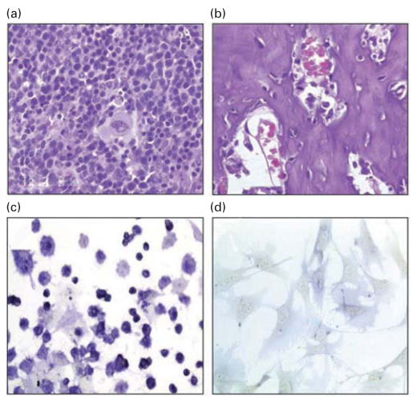
- DNA序列的改变可由DNA复制错误和致癌物的作用引起。所有致癌物都是诱变剂；也就是说，它们通过改变DNA中的一个或多个核苷酸而起作用。
- 间接致癌物是最常见的一类致癌物，它们必须先被激活才能损伤DNA。在动物体内，代谢活化通过细胞色素P-450系统进行，这条通路通常是细胞用来清除有害外源化学物质的。而像EMS和DMS这样的直接致癌物则不需要此类细胞内的修饰就能损伤DNA。
- 苯并(a)芘是香烟烟雾的一种成分，它引起p53基因的失活性突变，从而促成人类肺部肿瘤的起始。
- 多次打击模型提出，引起癌症需要多个突变，它与以下事实一致：给定肿瘤中细胞的遗传同质性、观察到的人类癌症发病率随年龄增长而升高，以及致癌转基因与抑癌基因突变对小鼠肿瘤形成的协同效应。
- 结肠癌通过界限分明的形态学阶段发展，这些阶段通常与特定抑癌基因和原癌基因的突变相关。
- 在那些能够以时间特异性和组织特异性方式表达癌基因和抑癌基因的培养细胞与小鼠中，我们可以了解癌症如何发生，以及这些基因如何促成该疾病的发展与进展。
24.3 癌症的遗传学基础
如前所述，三大类基因——原癌基因（如RAS）、抑癌基因（如APC）和基因组维护基因——的突变在癌症发生中起关键作用（表24-1）。这些基因编码许多有助于控制细胞生长和增殖的蛋白质（图24-15）。几乎所有人类肿瘤都在某类基因中存在失活性突变，这些基因的产物通常作用于多种细胞周期检查点通路，在先前步骤发生错误或DNA受损时阻止细胞在细胞周期中的推进。例如，大多数癌症在编码一种或多种通常限制G1期推进的蛋白质的基因中存在失活性突变，或者在编码驱动细胞通过细胞周期的蛋白质的基因中存在激活性突变。同样，在几种起源不同的人类肿瘤中都发现了组成性激活的RAS或其他被激活的信号转导蛋白。因此，恶性肿瘤与第19章讨论的控制细胞周期的复杂过程是同一枚硬币的两面。在导致肿瘤生长的一系列事件中，癌基因与抑癌基因突变共同作用，产生了前几节所述的全部肿瘤细胞特性。在本节中，我们讨论引起癌症的一般突变类型，并解释为什么某些遗传性突变会增加特定癌症的风险。本节最后描述肿瘤的分子分析如何改变癌症的治疗方式。个性化医疗——在分子水平上诊断个体肿瘤并为患者特定癌症设计治疗的能力——很可能在21世纪成为现实。
功能获得性突变将原癌基因转变为癌基因
任何编码能够在培养中转化细胞的蛋白质的基因，通常还需要与其他细胞改变相配合，或在动物中诱发癌症，这种基因就被认为是癌基因。在许多已知的癌基因中，除少数外，都源自正常细胞基因（即原癌基因），其野生型产物促进细胞增殖或具有其他对癌症重要的特征。例如，前面讨论过的RAS基因是一种原癌基因，编码一种促进细胞分裂的细胞内信号转导蛋白；而源自RAS的突变型rasD基因是一种癌基因，其蛋白质产物提供过度或不受控制的促增殖信号。其他原癌基因编码促生长的信号分子及其受体、抗凋亡（细胞存活）蛋白和转录因子。
| 基因的正常功能 | 基因产物示例 | 突变的效应 | 突变基因的遗传特性 | 突变的来源 | |
|---|---|---|---|---|---|
| 原癌基因 | 促进细胞存活或增殖 | 抗凋亡蛋白、导致增殖的信号通路与信号转导通路组分、转录因子 | 功能获得性突变使细胞不受调控地增殖和存活 | 突变在遗传上为显性 | 由点突变、染色体易位、扩增产生 |
| 抑癌基因 | 抑制细胞存活或增殖 | 促凋亡蛋白、细胞周期推进的抑制因子、评估DNA/染色体损伤的检查点通路蛋白、抑制细胞增殖的信号通路组分 | 功能丧失性突变使细胞不受调控地增殖和存活 | 突变在遗传上为隐性 | 由缺失、点突变、甲基化产生 |
| 基因组维护基因 | 修复或防止DNA损伤 | DNA修复酶 | 功能丧失性突变使突变得以累积 | 突变在遗传上为隐性 | 由缺失、点突变、甲基化产生 |
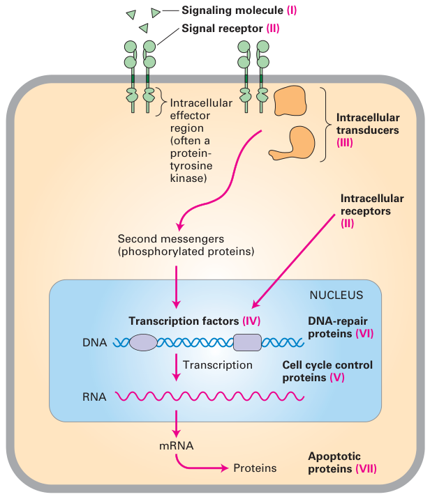
| Signaling molecule | 信号分子 |
| Signal receptor | 信号受体 |
| Intracellular transducers | 细胞内转导子 |
| Transcription factors | 转录因子 |
| Apoptotic proteins | 凋亡蛋白 |
| Cell cycle control proteins | 细胞周期控制蛋白 |
| DNA-repair proteins | DNA修复蛋白 |
| Intracellular effector region (often a protein-tyrosine kinase) | 细胞内效应区（常为蛋白酪氨酸激酶） |
| Second messengers (phosphorylated proteins) | 第二信使（磷酸化蛋白） |
| NUCLEUS | 细胞核 |
| Transcription | 转录 |
原癌基因转变为癌基因（也称为激活）通常涉及功能获得性突变。至少有四种机制可以从相应的原癌基因产生癌基因：1. 原癌基因中的点突变（即单个碱基对的改变），导致蛋白质产物过度活跃或组成性激活2. 染色体易位将两个基因融合在一起，产生一个杂合基因，编码一种嵌合蛋白，其活性与亲本蛋白不同，是组成性的3. 染色体易位使一个生长调控基因处于其他增强子的控制之下，导致该基因的不当表达4. 包含原癌基因的DNA片段发生扩增（即异常的DNA复制），使该片段存在众多拷贝，导致所编码蛋白质的过量产生由前两种机制中任何一种形成的癌基因，编码的癌蛋白与相应原癌基因编码的正常蛋白不同。相比之下，后两种机制产生的癌基因，其蛋白质产物与正常蛋白完全相同；它们的致癌效应是由于其产生水平高于正常，或是在正常不产生该蛋白的细胞中产生。
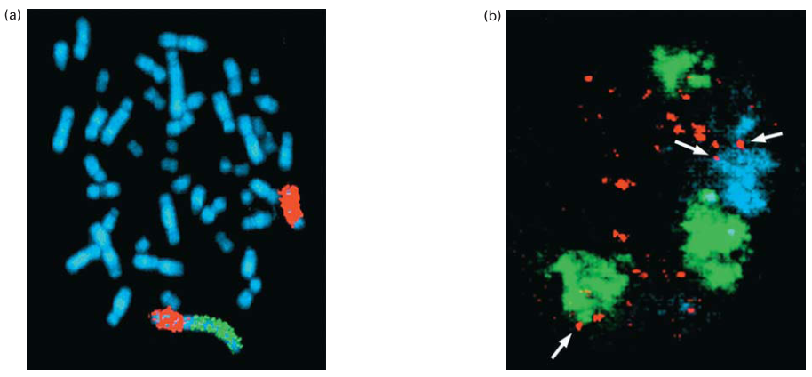
| homogeneously staining region (HSR) | 均匀染色区（HSR） |
| double-minute chromosome | 双微体染色体 |
DNA的局部扩增可使某一特定区域（通常是跨越数百千碱基的区域）产生多达一百个拷贝，这是肿瘤中常见的遗传学改变。正常情况下，这样的事件会被修复，或者细胞会被检查点通路阻止继续循环，因此这类损伤意味着某种DNA修复缺陷。这些扩增可采取两种形式之一：重复的DNA可能位于染色体的单个位点上，也可能以独立的微型类染色体小结构存在。第一种形式导致在扩增位点出现光学显微镜下可见的均匀染色区（HSR）；第二种形式产生与正常染色体分离的额外"微小"染色体，散布在染色的染色体标本中（图24-16）。
无论它们如何产生，癌基因的一个核心特点是：将原癌基因转变为癌基因的功能获得性突变在遗传上是显性的；也就是说，两个等位基因中只有一个发生突变就足以诱发癌症。
致癌病毒携带癌基因或激活细胞原癌基因
Peyton Rous从1911年开始的开创性研究，使人们最初认识到病毒在注射到合适的宿主动物体内时可以引起癌症。许多年后，分子生物学家证明他的劳氏肉瘤病毒（RSV）是一种逆转录病毒，其RNA基因组被逆转录为DNA，随后整合到宿主细胞基因组中（见图5-48）。除了所有逆转录病毒都有的"正常"基因外，像RSV这样的致癌转化病毒还携带一个癌基因：就RSV而言是v-src基因。随后用RSV突变型进行的研究证明，只有v-src基因，而非其他病毒基因，是诱导癌症所必需的。
20世纪70年代末，科学家们惊讶地发现，来自鸡及其他物种的正常细胞含有一种与RSV的v-src基因密切相关的基因。这种正常的细胞基因是一种原癌基因，通常用表示"细胞"的前缀"c"与病毒基因相区分（c-SRC）。RSV和其他致癌转化病毒被认为是通过将一个正常的宿主细胞原癌基因整合到其基因组中而产生的。随后整合基因中发生的突变将其转变为一种显性作用的癌基因，即使在正常的c-SRC原癌基因存在的情况下也能转化宿主细胞。这一现象最初被发现时，人们惊讶地发现这些危险的病毒竟然利用宿主自身的基因来对付它们。
由于其基因组携带强效的v-src癌基因，RSV在数天内即可诱发肿瘤。RSV被称为急性逆转录病毒。相比之下，大多数致癌逆转录病毒只有在数月或数年之后才诱发癌症。这些作用缓慢的逆转录病毒致癌性较弱，它们的基因组与RSV等病毒在一个关键方面不同：它们缺少癌基因。所有作用缓慢的、或称"长潜伏期"的逆转录病毒似乎都是通过整合到宿主细胞DNA中某个细胞原癌基因附近并激活其表达来致癌的。整合的逆转录病毒DNA中的长末端重复序列（LTR）可作为附近细胞基因的增强子或启动子，从而刺激其转录。例如，在禽白血病病毒（ALV）所致肿瘤的细胞中，逆转录病毒DNA插入到MYC基因附近。这些细胞过量产生MYC蛋白；如前所述，MYC的过量产生会导致细胞异常快速地增殖。作用缓慢的病毒之所以作用缓慢有两个原因：整合到细胞原癌基因（如MYC）附近是随机且罕见的事件，而且在明显的完整肿瘤出现之前还必须发生额外的突变。
在自然界的鸟类和小鼠群体中，作用缓慢的逆转录病毒比劳氏肉瘤病毒这类致癌逆转录病毒常见得多。因此，插入性原癌基因激活可能是逆转录病毒致癌的主要机制。尽管已知唯一能引起人类肿瘤的逆转录病毒是人T细胞淋巴营养性病毒（HTLV），但研究逆转录病毒所投入的巨大资源既带来了细胞癌基因的发现，也带来了对逆转录病毒的深入理解，后者后来加速了导致AIDS的HIV病毒的研究进展。
少数DNA病毒也具有致癌性。这些病毒的正常复制周期不涉及整合到宿主细胞基因组中，但病毒DNA可以通过细胞的DNA修复过程整合到宿主细胞的某条染色体上。尽管这是一个对病毒本身致命的罕见事件，但如果病毒DNA表达某种癌基因，宿主细胞就可能癌变。例如，许多疣和其他上皮细胞良性肿瘤是由含DNA的人乳头瘤病毒（HPV）引起的。HPV感染在医学上严重得多的后果是宫颈癌，它是女性中第三常见的癌症类型，仅次于肺癌和乳腺癌。用于取样宫颈组织并筛查可能癌症的巴氏涂片检查，被认为使宫颈癌的死亡率降低了约70%。我们将在本章后面进一步了解HPV癌蛋白。
逆转录病毒的癌基因源自正常细胞基因，除了使病毒在肿瘤中增殖外对病毒没有其他功能；与它们不同，DNA病毒的已知癌基因是病毒基因组的组成部分，是病毒复制所必需的。正如我们将看到的，感染细胞中由整合的病毒DNA表达的癌蛋白以多种方式刺激细胞生长和增殖。
抑癌基因中的功能丧失性突变具有致癌性
抑癌基因通常编码以某种方式抑制细胞增殖的蛋白质。这些增殖抑制蛋白中一个或多个的功能丧失性突变，促进了许多癌症的发生。抑癌基因所编码蛋白质中突出的有以下五类：1. 调节或抑制进入细胞周期的细胞内蛋白（如p16和Rb）
2. 抑制细胞增殖的分泌型激素或发育信号的受体或信号转导子（如TGF-β）
3. 在DNA受损时阻滞细胞周期的检查点通路蛋白（如p53）
4. 促进凋亡的蛋白质5. 参与DNA修复的酶一般来说，抑癌基因的一个拷贝就足以控制细胞增殖，因此必须使抑癌基因的两个等位基因都丢失或失活，才能促进肿瘤发生。所以，抑癌基因中促进肿瘤发生的功能丧失性突变是隐性的（见表24-1）。在这里，隐性意味着只要还有一个起作用的基因拷贝，产生大约正常量一半的蛋白质产物，肿瘤形成就会被阻止。然而，对某些基因来说，正常量一半的产物并不足够，在这种情况下，两个基因拷贝中仅丢失一个就可能导致癌症。这类基因被称为单倍剂量不足。丢失一个拷贝基因的这一丢失对最终表型起决定作用，因此这种类型的突变是显性的。因此，记住致癌基因可以呈显性的两种过程是有益的：(1) 单倍剂量不足的抑癌基因丢失一个拷贝，导致产物不足以控制细胞增殖；(2) 某个基因或蛋白被激活，即使在有一个正常等位基因存在的情况下也能引起细胞增殖——即显性癌基因（如上一节所述）。在许多癌症中，抑癌基因存在缺失或点突变，使其不能产生任何蛋白质，或产生无功能的蛋白质。另一种使抑癌基因失活的机制是其启动子或其他调控元件中胞嘧啶残基的甲基化，这会抑制其转录。这种甲基化常见于DNA的非转录区域（见第9章）。
抑癌基因中的遗传性突变增加癌症风险
携带抑癌基因遗传性突变的个体对某些癌症具有遗传易感性。这类个体通常遗传了该基因一个等位基因的生殖系突变；第二个等位基因的体细胞突变促进肿瘤进展。一个经典例子是视网膜母细胞瘤，它由RB功能丧失引起，RB是第一个被鉴定出的抑癌基因。如第19章所讨论，RB编码的蛋白质调控细胞周期进入。
患遗传性视网膜母细胞瘤的儿童遗传了一个有缺陷的RB基因拷贝，有时表现为13号染色体两个拷贝之一上的小缺失。这些儿童在生命早期发生多个视网膜肿瘤，且通常双眼受累。另一条染色体上正常RB基因的丢失或失活是肿瘤形成的关键步骤，产生一个不产生功能性Rb蛋白的细胞（图24-17a）。相比之下，患散发性视网膜母细胞瘤的个体遗传了两个正常的RB等位基因，其中每一个都在单个视网膜细胞中发生了功能丧失性体细胞突变或丢失（图24-17b）。由于丢失RB基因的两个拷贝远比丢失一个拷贝的可能性小，散发性视网膜母细胞瘤很罕见，且通常只累及一只眼。
如果在视网膜肿瘤变为恶性之前将其切除，患遗传性视网膜母细胞瘤的儿童往往能存活至成年并生育子女，但他们在以后的生活中发生其他类型肿瘤的风险升高。由于他们的生殖细胞含有一个正常和一个突变的RB等位基因，这些个体平均会将突变等位基因传给一半子女，将正常等位基因传给另一半。如果另一亲本有两个正常的RB等位基因，继承正常等位基因的子女是正常的。然而，继承突变等位基因的子女与其患病的亲本一样具有发生视网膜肿瘤的增强易感性，即使他们从另一位正常的亲本那里继承了正常的RB等位基因。因此，发生视网膜母细胞瘤的倾向是作为显性性状遗传的：一个突变拷贝就足以使个体易患该癌症。
正如我们稍后将看到的，许多人类肿瘤（不仅是视网膜肿瘤）含有突变型RB等位基因或影响Rb通路其他组分的突变；这些肿瘤大多由体细胞突变引起。尽管美国每年遗传性视网膜母细胞瘤的病例约有100例，但每年约有100,000例其他癌症涉及受孕后获得的RB突变。
其他癌症的类似遗传易感性与其他抑癌基因的遗传性突变相关。例如，遗传了一个APC等位基因生殖系突变的个体会发生数千个癌前肠息肉（见图24-12）。由于这些息肉中的一个或多个很可能进展为恶性肿瘤，这类个体在50岁之前发生结肠癌的风险大大增加。对50岁及以上的人群来说，即使已知不存在APC突变，用结肠镜检查息肉也是个好主意。同样，遗传了另一个抑癌基因BRCA1的一个突变等位基因的女性，到50岁时发生乳腺癌的概率为60%，而遗传了两个正常BRCA1等位基因的女性这一概率为2%。BRCA1杂合突变还将卵巢癌的终生风险从2%提高到15–40%。BRCA1蛋白参与修复辐射诱导的DNA损伤。在那些遗传了一个突变BRCA1等位基因的女性中，第二个BRCA1等位基因的丢失连同其他突变，是正常乳腺导管细胞变为恶性所必需的。然而，BRCA1在散发性乳腺癌中通常不发生突变。
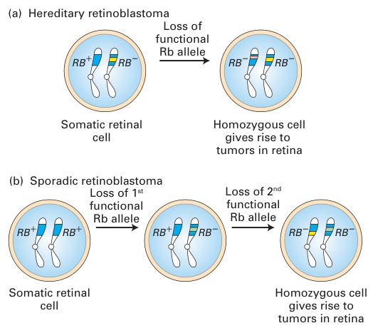
| Loss of 1st functional Rb allele | 第一个功能性Rb等位基因的丢失 |
| Loss of 2nd functional Rb allele | 第二个功能性Rb等位基因的丢失 |
| Hereditary retinoblastoma | 遗传性视网膜母细胞瘤 |
| Sporadic retinoblastoma | 散发性视网膜母细胞瘤 |
| Somatic retinal cell | 体细胞视网膜细胞 |
| Homozygous cell gives rise to tumors in retina | 纯合细胞产生视网膜肿瘤 |
估计值不一，但遗传性癌症（部分由某基因的遗传性版本引起的癌症）被认为约占人类癌症的10%。进一步追踪人类基因贡献的工作似乎很可能提高这一比例。然而，重要的是要记住，仅有遗传的生殖系突变不足以引起肿瘤发生。不仅遗传的正常抑癌基因等位基因必须丢失或失活，而且还必须发生影响其他基因的突变，癌症才会发生。因此，携带隐性抑癌基因突变的人可能对环境诱变剂（如辐射）异常敏感。
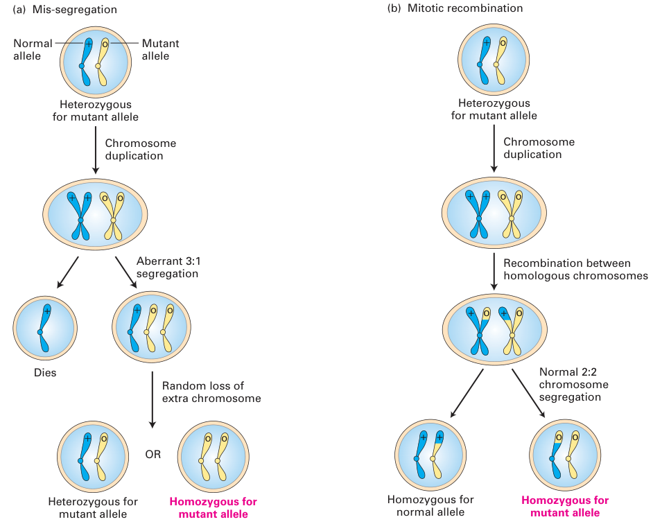
| Mis-segregation | 错误分离 |
| Normal allele | 正常等位基因 |
| Mutant allele | 突变等位基因 |
| Heterozygous for mutant allele | 对突变等位基因杂合 |
| Homozygous for mutant allele | 对突变等位基因纯合 |
| Homozygous for normal allele | 对正常等位基因纯合 |
| Aberrant 3:1 segregation | 异常的3:1分离 |
| Mitotic recombination | 有丝分裂重组 |
| Recombination between homologous chromosomes | 同源染色体之间的重组 |
| Normal 2:2 chromosome segregation | 正常的2:2染色体分离 |
| Chromosome duplication | 染色体复制 |
| Random loss of extra chromosome | 额外染色体的随机丢失 |
| Dies | 死亡 |
抑癌基因仅一个拷贝发生突变本身通常不会引起癌症，因为剩余的正常等位基因阻止异常生长。然而，体细胞中剩余正常等位基因随后发生丢失或失活（称为杂合性丢失（LOH））会导致癌症发生。有三种机制可导致正常等位基因的丢失。第一，正常等位基因可因新发失活性突变或缺失而失活。第二，如图24-18a所示，染色体错误分离可导致携带正常等位基因的染色体丢失。这两种机制都不特别常见。迄今LOH最常见的机制是携带正常等位基因的染色单体与携带突变等位基因的同源染色单体之间的有丝分裂重组。如图24-18b所示，随后的染色体分离可以产生一个对突变抑癌基因等位基因纯合的子细胞。
表观遗传改变可促进肿瘤发生
我们刚刚看到突变如何通过使抑癌基因失活来破坏对细胞增殖的控制。然而，这类基因也可以因表达被抑制而沉默。DNA甲基化的改变，以及组蛋白修饰酶或染色质重塑复合体活性的改变，现在被认为是肿瘤发生的主要驱动力。
正如我们在第9章所见，DNA甲基化发生在CpG岛的胞嘧啶上，CpG岛主要位于基因的启动子中。这些C的甲基化导致启动子被抑制。很大一部分结直肠癌以DNA超甲基化为特征。DNA低甲基化也是癌症的一个标志。许多与癌症相关的基因的启动子处于低甲基化状态，因此受其控制的基因表达增加。例如，25%的急性髓系白血病以DNA低甲基化为特征，这是由催化CpG二核苷酸甲基化的酶发生失活性突变所致。最近发现的一种与DNA甲基化相关的DNA修饰，涉及CpG岛的5-甲基胞嘧啶转变为一种羟化变体（5-羟甲基胞嘧啶）。这种DNA修饰也与癌症有关。催化这些转变的酶属于DNA羟化酶的TET家族。这些酶需要α-酮戊二酸作为辅因子，并被肿瘤代谢物2-羟基戊二酸抑制（见图24-4）。编码染色质修饰因子和调控因子的基因也已成为肿瘤发生的驱动因素。对许多肿瘤类型的系统性全基因组测序揭示，约40个编码表观遗传调控因子的基因存在高度反复出现的改变。在编码修饰组蛋白或解读这些翻译后修饰的酶的基因中发现了反复出现的突变。编码组蛋白甲基转移酶、组蛋白去甲基化酶和组蛋白乙酰转移酶的基因都被发现在多种多样的肿瘤中发生突变。有趣的是，肿瘤通常只携带编码染色质修饰酶的基因的单个突变等位基因，表明这些突变是单倍剂量不足的。据推测，丢失两个等位基因会杀死细胞，而只有一个功能性等位基因就足以改变靶基因的表达，从而促进肿瘤发生。
在与癌症相关的染色质重塑因子中，核心的是SWI/SNF复合体。这些大型而多样的多蛋白复合体以ATP依赖性解旋酶为核心，常常控制组蛋白修饰和染色质重塑（见第9章）。例如，它们可以引起核小体位置或结构的改变，使基因对控制转录的DNA结合蛋白变得可及或不可及。如果某个靶基因通常由SWI/SNF介导的染色质变化所激活或抑制，那么编码SWI或SNF蛋白的基因发生突变就会引起该基因表达的改变。用转基因小鼠进行的研究表明，SWI/SNF在抑制E2F基因表达中发挥作用，从而抑制细胞周期的推进。因此，SWI/SNF功能的丢失与Rb功能的丢失一样，可导致过度生长甚至癌症。事实上，在小鼠中，Rb蛋白招募SWI/SNF蛋白来抑制编码E2F的基因的转录。
来自人类和小鼠的最新证据强烈表明SNF5基因与癌症有关。SNF5蛋白是SWI/SNF复合体的核心成员。在人类中，失活性的体细胞SNF5突变引起横纹肌样瘤（最常发生于肾脏），以及发生脑部和其他肿瘤的遗传性（家族性）倾向。随后的研究发现，编码各种BAF蛋白（它们也是SWI/SNF复合体的亚基）的基因在40%的肾癌、50%的卵巢癌以及很大一部分肝癌和膀胱癌中发生突变。总之，表观遗传失调已成为肿瘤发生的主要促成因素。事后看来，这一观点可能并不令人意外，因为表观遗传调控提供了同时改变许多因子和调控通路表达的机会。
微小RNA既可促进也可抑制肿瘤发生
在过去十年中，出现了一类新的致癌因子。非编码RNA（不编码蛋白质的RNA），尤其是微小RNA（miRNA），在肿瘤发生中起关键作用。miRNA的生成通常涉及前体RNA的转录，该前体经过一系列加工步骤被修剪成20–22个核苷酸长的成熟miRNA。成熟miRNA通常与其靶RNA的3′非翻译区（UTR）碱基配对，抑制其翻译，有时导致其降解。迄今为止，已在人类中鉴定出1500多种miRNA，它们被认为参与调节多达30%的细胞mRNA，在细胞增殖、分化和凋亡中发挥基础性作用。许多miRNA也已被证明具有抑癌基因或癌基因的功能。
miRNA在肿瘤发生中最早已知的作用是通过对染色体区域13q14.3的分析揭示的。在大多数慢性淋巴细胞白血病（CLL）、前列腺癌和垂体腺瘤病例中，该基因组区域被发现缺失。对致病性缺失的表征显示，两种miRNA——miR-15-a和miR-16-1——的缺失导致CLL。两种miRNA都发生突变的小鼠会患上CLL。这两种miRNA似乎控制着细胞增殖基因。在它们缺失时，B细胞的增殖增加。同样，let-7家族的miRNA与肺癌、结肠癌、乳腺癌和卵巢癌有关。Let-7 miRNA下调Ras的翻译。因此在缺乏这些miRNA时，Ras被组成性地过量产生，促进肿瘤发生。Let-7 miRNA还有其他靶标，例如致癌转录因子MYC，我们将在下一节详细讨论。癌症中miRNA研究得出的一个普遍主题是，每种miRNA都有多个靶标，因此有充分的机会促进肿瘤发生。
与参与肿瘤发生的蛋白质一样，miRNA既可以像抑癌基因那样发挥作用，也可以像癌基因那样发挥作用。miRNA miR-15-a和miR-16-1表现得像抑癌基因；它们通常抑制细胞增殖，其缺失导致细胞生长。然而，也发现一些miRNA在癌症中过表达，对其分析表明它们像癌基因一样发挥作用。特别令人感兴趣的是miR-21，它在大多数实体瘤中过表达，包括胶质母细胞瘤以及乳腺、肺、胰腺和结肠肿瘤。这种miRNA靶向几种抑癌基因，其中包括编码PTEN磷酸酶的基因。关于miRNA如何促进肿瘤发生，还需要了解多得多的内容，但很明显，通过其调节许多不同基因的能力，它们能以不止一种方式影响疾病进展。
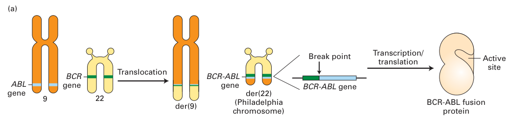
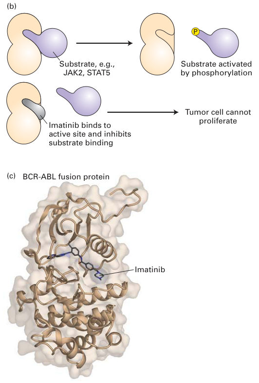
| ABL gene | ABL基因 |
| BCR gene | BCR基因 |
| Translocation | 易位 |
| BCR-ABL gene | BCR-ABL基因 |
| Break point | 断点 |
| BCR-ABL fusion protein | BCR-ABL融合蛋白 |
| der(22) (Philadelphia chromosome) | der(22)（费城染色体） |
| Active site | 活性位点 |
| Substrate, e.g., JAK2, STAT5 | 底物，例如JAK2、STAT5 |
| Substrate activated by phosphorylation | 底物被磷酸化激活 |
| Imatinib binds to active site and inhibits substrate binding | 伊马替尼结合活性位点并抑制底物结合 |
| Tumor cell cannot proliferate | 肿瘤细胞不能增殖 |
| Imatinib | 伊马替尼 |
研究者正在鉴定肿瘤发生的驱动因素
正如我们所见，促生长和抗凋亡基因中的激活性突变，以及抑制生长和细胞死亡基因中的功能丧失性突变，导致致癌转化。鉴定这些突变并理解受累基因如何发挥功能，为肿瘤发生过程提供了关键见解，并为新疗法的开发铺平了道路。因此，研究者长期以来一直在搜寻癌基因和抑癌基因，这一点并不令人意外。
20世纪60年代，研究者首次意识到某些癌症具有特征性的染色体改变。慢性髓系白血病（CML）是人类中一种常见的白血病，被发现与费城染色体相关（图24-19a），后者由22号与9号染色体之间的易位产生。这两条染色体交换其末端区域，导致22号染色体大小发生特征性改变，可通过光学显微镜检测到。在该易位断点处，生成了一个新的融合蛋白——BCR-ABL融合蛋白，产生一种蛋白激酶，它磷酸化野生型ABL激酶通常不磷酸化的蛋白质，从而激活许多细胞内信号转导蛋白。如果这种易位发生在骨髓中的造血细胞中，嵌合BCR-ABL癌基因的活性会导致CML的初期阶段，其特征为白细胞数量扩增。携带BCR-ABL融合蛋白的细胞中发生第二个功能丧失性突变（例如在抑癌基因p53或RB中）会导致急性白血病，后者常常是致命的。
CML的染色体易位只是一长串与特定白血病类型相关的独特（或称"标志性"）染色体易位中的第一个。这些易位中有许多涉及编码转录调控因子的基因，特别是Hox基因的转录调控因子，Hox基因是胚胎发育期间细胞增殖和分化所需的一组转录因子。每发现一个这样的联系，都为更深入地理解该疾病、更早的诊断和新的疗法提供了机会。就CML而言，正如我们稍后将看到的，通向成功治疗的第二步已经迈出。
DNA测序技术的发展彻底改变了癌症基因的搜寻。将高通量测序方法与能够特异性捕获含已知蛋白质编码序列的基因组DNA的方法相结合，促进了人类肿瘤的系统性分析。迄今为止，我们几乎对所有人类肿瘤类型都有了序列信息。此外，从某一特定类型的许多肿瘤中收集序列信息，正开始生成特定肿瘤类型所特有的突变、扩增、缺失和易位的全面清单。由此呈现出的图景显示，在任何特定癌症类型中，只有少数癌症基因在很高比例中发生突变。大多数基因只在某一特定类型肿瘤的2–10%中发生突变。这种模式使得在众多癌症"乘客突变"中鉴定癌症"驱动突变"充满挑战，但随着肿瘤序列数量的不断增加和统计工具的发展，科学家们希望在不久的将来能够建立真正癌症基因的全面目录，并评定各个癌症基因对该疾病的贡献程度。
癌症基因组测序还表明，不同肿瘤类型的遗传改变水平差异极大，有些癌症类型携带相对较少的遗传改变，而另一些则表现出高度复杂的突变模式。某些肿瘤类型似乎还与特征性的突变模式相关。例如，正是癌症基因组测序工作发现了染色体碎裂——即单条染色体的破碎与随机拼接——是侵袭性神经母细胞瘤的一个特征。肿瘤基因组的测序不仅在鉴定新的癌症基因方面具有巨大前景，而且正如我们接下来将看到的，它也正在成为疾病治疗不可或缺的工具。
分子细胞生物学正在改变癌症的诊断与治疗方式
对肿瘤发生驱动因素的鉴定不仅为我们提供了关于癌症如何发生和进展的分子理解，而且彻底改变了癌症的诊断和治疗方式。每一个癌细胞与正常细胞之间的差异都提供了一个新的机会，去鉴定一种只杀死癌细胞或至少阻止其失控生长的特定药物或疗法。因此，关于肿瘤分子细胞生物学的知识是关键信息，研究者可以利用它来开发更精确靶向癌细胞的抗癌疗法。
乳腺癌提供了一个很好的例子，说明分子细胞生物学技术如何影响了治疗，包括治愈性和姑息性治疗。在女性吸烟者增加导致肺癌发病率上升之前，乳腺癌是女性最致命的癌症，如今它仍是女性癌症死亡的第二大常见原因。乳腺癌的病因尚不清楚，但如果携带某些突变，其发生率会增加。乳腺癌常在常规乳房X线摄影（X线）检查中被诊断。通常取1–2 cm3组织块的活检以确认诊断，并用抗体检测是否存在高水平的雌激素或孕激素受体。这些类固醇受体能够刺激肿瘤生长，有时在乳腺癌细胞中高水平表达。如果存在其中任一受体，就会在治疗中加以利用。一种名为他莫昔芬的药物可抑制雌激素受体，可用于剥夺肿瘤细胞的生长刺激激素。活检还检测原癌基因HER2/NEU的扩增，正如我们在第16章所见，该基因编码人EGF受体2。一种特异性针对HER2的单克隆抗体已成为对过表达HER2的那部分乳腺癌极为成功的新疗法。注入血液的HER2抗体识别HER2并使其内化，选择性杀死癌细胞，而对产生中等量HER2的正常乳腺（及其他）细胞没有明显影响。同样，许多肺癌存在EGF受体位点的扩增。用EGFR抑制剂厄洛替尼治疗，大大延长了这类肺癌患者的预期寿命。
乳腺癌的治疗采用手术、放疗和化疗相结合的方式。第一步是手术切除肿瘤，并检查淋巴结以确定是否有转移性疾病的证据，后者是主要的不良预后因素。随后的治疗包括8周、使用三种不同药物的化疗和6周的放疗。这些严苛的治疗旨在杀死正在分裂的癌细胞；然而，它们也会引起多种副作用，包括血细胞生成受抑、脱发、恶心和神经病变。这些效应会削弱免疫系统的强度，有感染风险，并因氧供应不足而导致虚弱。为帮助抵消这些效应，患者会被给予生长因子G-CSF以促进中性粒细胞（一种对抗细菌和真菌感染的白细胞）的形成，以及促红细胞生成素（Epo）以刺激红细胞生成。尽管有所有这些治疗，一位平均风险的女性（60岁，2 cm3肿瘤，1个阳性淋巴结）在10年内死于其癌症的风险为30–40%。这一风险可通过激素阻断治疗（如他莫昔芬）降低10–15%，这是利用了显示癌细胞上存在激素受体的分子数据。用针对HER2/NEU癌蛋白的抗体治疗可使死亡率再降低5–10%。因此，分子生物学正在对乳腺癌患者的存活率产生巨大影响，尽管仍远未达到人们期望的程度。
费城染色体的发现及其所产生的重要癌基因——BCR-ABL融合基因，加上对ABL蛋白分子作用的发现，共同促成了CML的一种强有力的新疗法。经过艰苦的搜寻，一种名为伊马替尼（格列卫）的ABL激酶抑制剂在20世纪90年代初被确定为CML的可能治疗方法。伊马替尼直接结合ABL激酶的活性位点并抑制激酶活性，对CML细胞具有高度致死性，同时不伤害正常细胞（见图24-19b、c）。临床试验表明伊马替尼尽管有一些副作用，但在治疗CML方面效果显著，之后它于2001年被FDA批准，成为首个靶向肿瘤细胞特有信号转导蛋白的癌症药物。伊马替尼还抑制其他几种与不同癌症有关的酪氨酸激酶，并在治疗这些疾病（包括某些类型的胃肠道肿瘤）的试验中取得了成功。人类基因组中编码有90种功能性酪氨酸激酶，因此与伊马替尼相关的药物可能有助于控制所有这些蛋白的活性。一个持续存在的挑战是，肿瘤细胞可以演化出对伊马替尼及其他此类药物的抗性，从而需要发明替代药物。 ■
为了找到更多可用于新疗法的肿瘤特有遗传改变，研究者现在使用RNAi和基因组编辑技术来鉴定那些一旦失活就会导致肿瘤细胞（而非正常细胞）死亡的基因。这种鉴定不同遗传改变之间合成致死相互作用（这些改变本身并不致死）的方法最早是在芽殖酵母中建立的。随着全基因组小发夹RNA（shRNA）文库（靶向人类基因组中每个基因的RNAi构建体集合）以及CRISPR-Cas9系统等其他基因组编辑方法的发展（见第6章），这种方法现在在人类细胞中也可行。肿瘤细胞和正常细胞被成池的shRNA构建体感染，每个构建体都带有一种称为"条形码"的独特序列标签。经过一段时间的生长后，可以分离出这些RNA构建体，并通过测序剩余的构建体来鉴定从池中丢失的shRNA。丢失的shRNA表明其靶基因对它们所丢失的那种细胞类型的存活性是必需的。那些在肿瘤细胞中引起致死而在正常细胞中不引起致死的shRNA构建体提示，它们所靶向的基因对肿瘤细胞的存活是必需的，而对正常细胞则不是。例如，这种方法已被用于鉴定那些一旦失活就会导致携带致癌形式RAS（即K-ras癌基因）的癌细胞选择性致死的基因。这些基因编码的蛋白质可为开发针对携带致癌形式RAS的肿瘤的新疗法提供新的靶点。
未来医学的愿景是，现代测序技术以及全基因组RNA和蛋白质分析技术（见第3章和第6章）将使医生能够对肿瘤进行分类，并提供一份驱动癌症生长的致癌病变的全面清单。治疗随后将根据每位患者癌症的独特性质量身定制。在许多癌症中，如乳腺癌和CML，我们已经可以看到这一未来正在成形。
- 原癌基因中的显性功能获得性突变和抑癌基因中的隐性功能丧失性突变均具有致癌性。
- 原癌基因编码的蛋白质包括促生长信号蛋白及其受体、信号转导蛋白、转录因子和抗凋亡蛋白。
- 原癌基因两个等位基因之一发生激活性突变，即可将其转变为癌基因。这可以通过点突变、基因扩增、基因易位或表达异常发生。
- 抑癌基因编码直接或间接控制细胞周期推进的蛋白质，例如在先前步骤发生错误时阻滞细胞周期的检查点通路蛋白、抑制生长的信号通路的组分，以及促凋亡蛋白。
- 第一个被认识的抑癌基因RB在视网膜母细胞瘤和许多其他肿瘤中发生突变；大多数肿瘤中Rb通路的某个组分发生改变。
- 遗传一个RB突变等位基因会大大增加发生某种特定癌症的概率，许多其他抑癌基因（如APC和BRCA1）也是如此。
- 在出生时对某个抑癌基因突变呈杂合状态的个体中，体细胞可以通过正常等位基因的突变或缺失、染色体错误分离、有丝分裂重组或基因沉默而发生杂合性丢失（LOH）。
- 影响表观遗传调控因子（如组蛋白修饰酶或染色质重塑因子）的突变与多种肿瘤相关。
- 微小RNA可以通过影响多种癌蛋白的表达来促进或抑制肿瘤发生。
- 新型测序技术极大地加速了癌症相关基因的发现，并对癌症的诊断和治疗产生深远影响。
- 用于表征个体肿瘤的分子技术的出现，使得可以应用针对特定肿瘤特性的药物和抗体治疗。这一策略使得对个体患者的治疗更为有效，并减少了使用无效且可能有毒的药物或抗体。这些改进使乳腺癌死亡率大幅降低。
- 新型shRNA和基因组编辑方法使得可以鉴定癌细胞存活所特需的基因，从而促进新治疗靶点的发现。
24.4 癌症中细胞生长与死亡通路的失调
在本节中，我们更详细地考察促生长与抑制生长的信号通路失调如何促成肿瘤发生。我们首先讨论，导致某些蛋白出现不受调控的组成性活性或过量产生的突变如何促进细胞增殖与转化。接着我们讨论分化通路中的功能丧失性突变如何促成肿瘤发生。最后，我们描述控制程序性细胞死亡的基因（如p53）的失调如何驱动肿瘤发生。
致癌受体可在缺乏外源生长因子时促进增殖
由某个促生长信号蛋白发生改变而引起其过度活化，看起来似乎是癌症的一种可能机制，但实际上这种情况很少发生。迄今只发现了一个天然存在的这类癌基因，即sis。sis癌基因编码一种改变了的血小板衍生生长因子（PDGF），当它高水平表达时，能异常地刺激那些通常表达PDGF受体的细胞增殖。更常见的情况是，癌细胞开始产生一种未经改变的生长因子，作用于产生它自身的那个细胞。这一现象称为自分泌刺激。
相比之下，编码转导促生长信号的细胞表面受体的癌基因，则与好几种类型的癌症有关。这类受体中有许多在其胞质结构域中具有内在的蛋白酪氨酸激酶活性，这种活性在被激活之前一直处于静息状态。配体与这些受体酪氨酸激酶（RTK）的胞外结构域结合，导致其二聚化并激活其激酶活性，从而启动一条最终促进增殖的胞内信号通路。
在某些情况下，一个点突变就能把正常的RTK变成一种即使没有配体也能二聚化并具有组成性活性的受体。例如，单个点突变可将正常人表皮生长因子受体2（HER2）转变成NEU癌蛋白（"NEU"一名来自它最初被发现的作用，即在神经母细胞瘤中的作用），它是一些小鼠癌症的起始因子（图24-20，左）。类似地，一种称为多发性内分泌腺瘤病2型的人类肿瘤会产生一种组成性活跃的二聚体胶质细胞源性神经营养因子（GDNF）受体，它由胞外结构域中的一个点突变引起。GDNF受体和HER2受体都是蛋白酪氨酸激酶，因此这些组成性活跃的形式会过度磷酸化其下游靶蛋白。在另一些情况下，胞外配体结合结构域的大部分缺失会产生一种组成性活跃的致癌受体。例如，正常EGF受体胞外结构域的缺失（图24-20，右）会把它转变成二聚体的ErbB癌蛋白（得名于成红细胞增多症病毒，在这种病毒中首次鉴定出该改变基因的病毒版本）。导致正常RTK过量产生的突变也可以是致癌的。例如，许多人类乳腺癌会过量产生一种正常的HER2受体因为其编码基因发生了扩增。结果，这些细胞在极低浓度的EGF及相关激素存在时就被刺激增殖，这一浓度低到不足以刺激正常细胞增殖（见第16章）。
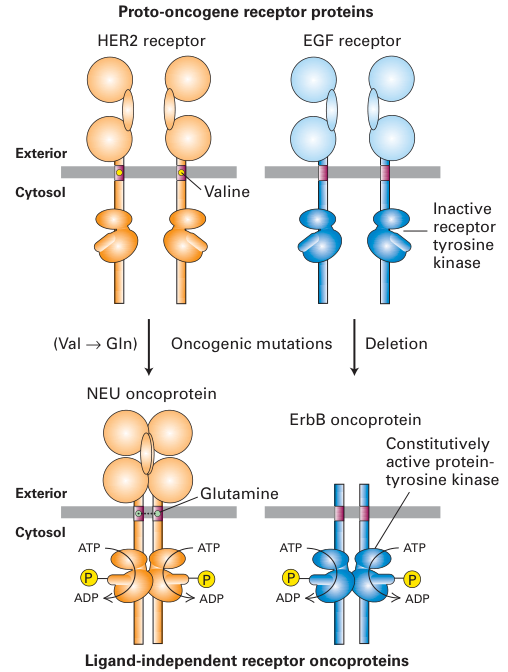
| Exterior | 胞外 |
| Cytosol | 胞质 |
| NEU oncoprotein | NEU癌蛋白 |
| ErbB oncoprotein | ErbB癌蛋白 |
| HER2 receptor | HER2受体 |
| EGF receptor | EGF受体 |
| Proto-oncogene receptor proteins | 原癌基因受体蛋白 |
| Ligand-independent receptor oncoproteins | 配体非依赖性受体癌蛋白 |
| Constitutively active protein-tyrosine kinase | 组成性活跃的蛋白酪氨酸激酶 |
| Oncogenic mutations | 致癌突变 |
| Deletion | 缺失 |
| Valine | 缬氨酸 |
| Glutamine | 谷氨酰胺 |
许多癌基因编码组成性活跃的信号转导蛋白
大量癌基因来源于原癌基因，其编码蛋白是信号转导通路的组分或调节因子——其中最为突出的是Ras通路。正如我们在第16章所见，Ras是将信号从活化受体转导至蛋白激酶级联反应的关键组分。在通路的第一部分，来自活化RTK的信号经两个接头蛋白传递给RAS，使其转变为活性的GTP结合形式（见图16-21）。在通路的第二部分，活化的RAS通过两个中间蛋白激酶把信号传递给MAP激酶。随后活化的MAP激酶磷酸化若干转录因子，诱导重要的生长与增殖蛋白的合成（见图16-26）。这条RTK/Ras/MAP激酶信号级联的几乎每一个组分都已被鉴定为癌基因或抑癌基因（图24-21）。
研究得最透彻的癌基因中就有ras基因本身，它们是第一批被认识到的非病毒癌基因（见经典实验24-1）。RAS中的多种改变中的任何一种都可导致其不受控制、因而呈显性的活性。特别地，如果一个点突变把RAS序列中第12位的甘氨酸替换成任何其他氨基酸，正常蛋白就被转变成组成性活跃的癌蛋白（见第16章）。这个简单的突变降低了该蛋白的GTP酶活性，从而使RAS维持在有活性的GTP结合状态。使RAS活化的突变使RTK通路的第一部分短路，使得由配体与受体结合所引发的上游激活变得不再必要。许多类型的人类肿瘤都产生组成性活跃的RAS癌蛋白，包括膀胱癌、结肠癌、乳腺癌、皮肤癌和肺癌、神经母细胞瘤以及白血病。
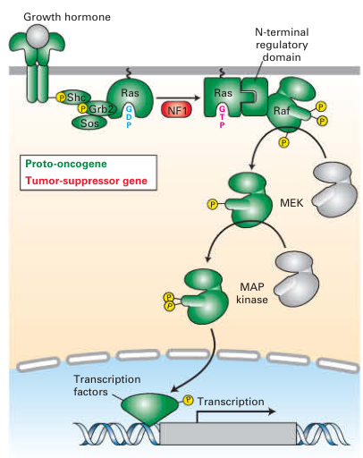
| Transcription factors | 转录因子 |
| Growth hormone | 生长激素 |
| Proto-oncogene | 原癌基因 |
| Tumor-suppressor gene | 抑癌基因 |
| N-terminal regulatory domain | N端调节结构域 |
| MAP kinase | MAP激酶 |
组成性RAS激活也可源于GTP酶激活蛋白（GAP）中的隐性功能丧失性突变。GAP的正常功能是加速GTP的水解，从而加速活性的GTP结合型Ras向失活的GDP结合型RAS转变（见图3-34）。GAP的缺失导致下游信号转导蛋白受到持续的RAS激活。例如，神经纤维瘤病——一种由围绕神经的鞘细胞形成的良性肿瘤——是由NF1两个等位基因的缺失引起的，NF1编码一种RAS GAP型蛋白（见图8-20）。神经纤维瘤病患者遗传了一个突变型NF1等位基因；随后另一个等位基因发生体细胞突变，便导致神经纤维瘤的形成。因此，NF1与RB一样是一种抑癌基因，而患神经纤维瘤病的倾向，与遗传性视网膜母细胞瘤一样，是以常染色体显性性状遗传的。
编码RTK/RAS/MAP激酶通路其他改变组分的癌基因也已被鉴定出来（见图24-21）。例如，在约50%的黑色素瘤中鉴定出了组成性活跃的RAF形式。与组成性活跃的RAS形式一样，这些突变型RAF不再对来自细胞表面的调节信号作出响应，并持续发出细胞生长与增殖的信号。
除RTK/RAS/MAP激酶信号通路的组分外，胞质蛋白激酶在癌症中也经常发生突变。事实上，第一个被发现的癌基因——来自劳氏肉瘤逆转录病毒的v-src——就编码一种组成性活跃的蛋白酪氨酸激酶。至少有八种哺乳动物原癌基因编码一个与SRC蛋白相关的非受体酪氨酸激酶家族。在另一些情况下，激酶与其他蛋白融合，赋予该蛋白激酶新的特异性。BCR-ABL融合蛋白就是这种致癌激酶的一个例子。如上所述，过度活跃的激酶和致癌激酶已在癌症治疗中被成功靶向。
核转录因子的不当产生可诱导转化
产生癌基因或破坏抑癌基因的突变最终会导致基因表达的改变。这些改变可通过比较正常细胞与肿瘤细胞中产生的不同mRNA的量来测定。由于对基因表达最直接的影响是由转录因子施加的，因此许多癌基因编码转录因子便不足为奇。JUN和FOS就是两个例子，它们最初是在转化性逆转录病毒中鉴定出来的，后来发现它们在有些人肿瘤中过表达。JUN和FOS原癌基因编码的蛋白有时会结合形成一种异二聚体转录因子，称为AP1，它能与许多基因的启动子和增强子中存在的一段序列结合（见图9-31a和第16章）。这些蛋白作为癌蛋白发挥作用的方式，是激活编码促生长蛋白的关键基因的转录，或抑制抑制生长的基因的转录。
许多核原癌基因蛋白是在正常细胞受刺激生长时产生的，这表明它们直接参与生长调控。例如，用PDGF处理静息的小鼠3T3细胞，可使转录因子FOS和MYC的产生增加约50倍，这两种转录因子分别是FOS和MYC原癌基因的产物。最初FOS出现短暂升高，随后MYC出现较为持久的升高（图24-22）。两种蛋白的水平都在数小时内下降，这种调节效应在正常细胞中可能有助于避免癌症。FOS和MYC蛋白刺激那些编码促进细胞周期通过G1期以及G1向S转变的蛋白的基因进行转录。
在正常细胞中，FOS和MYC的mRNA及其编码的蛋白本质上不稳定，在基因转录之后会迅速降解。把FOS从正常基因转变为癌基因的某些遗传改变，涉及那些通常使FOS mRNA和蛋白寿命短促的序列发生缺失。MYC原癌基因向癌基因的转变可通过不同的机制发生。在被称为伯基特淋巴瘤的人类肿瘤细胞中，MYC基因被易位到重链抗体基因附近的一个位点，这些抗体基因通常在产生抗体的白细胞中是有活性的（图24-23）。MYC易位是抗体产生细胞成熟过程中正常DNA重排的一种罕见异常。被易位的MYC基因现在受抗体基因增强子的调控，持续高水平表达，使细胞发生癌变。含有MYC基因的一段DNA发生局部扩增（见于若干种人类肿瘤），也会导致本来正常的MYC蛋白产生过多。
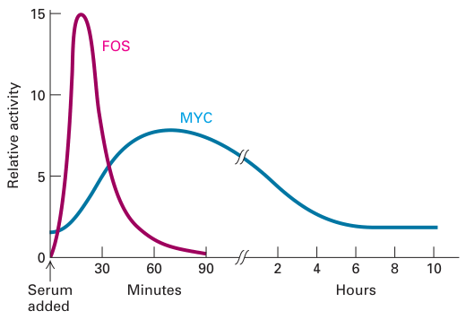
| Relative activity | 相对活性 |
| Hours | 小时 |
| Minutes | 分钟 |
| Serum added | 加入血清 |
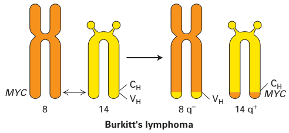
| Burkitt's lymphoma | 伯基特淋巴瘤 |
| VH | VH区 |
| CH | CH区 |
MYC基因编码一种碱性螺旋-环-螺旋蛋白，它作为一组相互作用蛋白的成员发挥作用；这组蛋白能以各种组合方式二聚化、与DNA结合，并协同调节靶基因的转录。这组蛋白的其他成员包括MAD、MAX和MNT。MAX可与MYC、MAD和MNT形成异二聚体。MYC-MAX二聚体调节控制增殖的基因，如细胞周期蛋白基因。MAD蛋白抑制MYC蛋白，这使人们有兴趣利用MAD蛋白或能刺激MAD蛋白的药物，来约束促成肿瘤形成的过度MYC活性。MYC蛋白复合物影响转录的方式是，把含有组蛋白乙酰转移酶的染色质修饰复合物（这类酶通常刺激转录；见第9章）招募到MYC靶基因上。MAD和MNT则与SIN3辅阻遏蛋白协同，引入组蛋白脱乙酰酶，帮助阻断转录。所有这些蛋白共同构成一个调控网络，利用蛋白-蛋白结合、DNA结合的差异以及转录调控来控制细胞增殖。MYC蛋白的过量产生使天平向有利于细胞生长和分裂的方向倾斜。
控制发育的信号通路异常与许多癌症相关
在正常发育过程中，Hedgehog（Hh）、Wnt和TGF-β等分泌型信号被用来指导细胞走向特定的发育命运，其中可能包括快速分裂的特性。这类信号的效应必须受到调控以使生长被限制在恰当的时间和地点。可用于约束这些强大发育信号效应的机制包括可诱导的胞内拮抗物、受体阻断物以及竞争性信号。使这类约束机制无法运作的突变很可能是致癌性的，会导致不适当的或癌性的生长。
Hedgehog信号通路在发育过程中被反复用来控制细胞命运，它是与癌症诱发有关的信号通路的一个很好的例子。在皮肤和小脑中，人类Hh蛋白之一——Sonic Hedgehog——通过与一种称为Patched1（PTC1）的膜蛋白结合并使其失活来刺激细胞分裂（见图16-34）。PTC1的功能丧失性突变使得细胞在没有Hh信号时也能增殖；因此PTC1是一种抑癌基因。遗传到单个有功能PTC1拷贝的人容易发生皮肤癌和脑癌；当剩下的那个等位基因受损时，两者之一即可发生。另一些人如果丢失该基因的两个拷贝，也会患上这些疾病。因此这些疾病既有家族性病例，也有散发性病例，正如视网膜母细胞瘤一样。Hh信号通路中其他基因的突变也与癌症相关。某些这类突变产生癌基因，不恰当地开启Hh靶基因；另一些则是影响PTC1等负调控因子的隐性突变。与许多其他抑癌基因的情况一样，PTC1功能的完全丧失会导致胎儿早期死亡，因为该蛋白为发育所必需，所以只有肿瘤细胞才是纯合的（ptc1/ptc1）。
其他章节中描述的许多信号通路，也在控制胚胎发育和成体组织中的细胞增殖方面发挥作用。近年来，影响其中大多数信号通路组分的突变已被与癌症联系起来。事实上，一旦某条发育通路中的一个基因被与某种人类癌症联系起来，从线虫、果蝇或小鼠等模式生物中获得的关于该通路的知识，就使人们能够有针对性地研究该通路中其他基因是否也参与了该癌症的其他病例。例如，APC——一个在结肠癌发生过程中发生突变的基因——现在已知是Wnt信号通路的一部分（见第16章）。这一知识反过来又促成了在结肠癌中发现β-catenin突变。
抑癌性发育基因的突变，在受累基因通常有助于抑制生长的组织中最易促进肿瘤形成。因此，在那些发育调控因子的主要作用是控制细胞命运——即决定发育成哪种类型的细胞——而非细胞分裂的组织中，这些突变不会引起癌症。发育性原癌基因的突变则可在受累基因通常促进细胞增殖的组织中诱导肿瘤形成，也可在该基因变得异常活跃的另一种组织中诱导肿瘤形成。
转化生长因子β（TGF-β）尽管名为生长因子，却抑制许多类型细胞的增殖，包括大多数上皮细胞和免疫系统细胞。TGF-β与其受体结合会激活胞质中的Smad转录因子（见图16-3）。Smad转位到细胞核后，能促进编码p15的基因表达，p15是细胞周期蛋白依赖性激酶4（CDK4）的一种抑制物，它使细胞阻滞在G1期。TGF-β信号还促进编码细胞外基质蛋白和纤溶酶原激活物抑制物1（PAI-1）的基因表达，后者可减少纤溶酶催化的基质降解。因此，TGF-β受体或Smad的功能丧失性突变会促进细胞增殖，并可能促成肿瘤细胞的侵袭和转移（图24-24）。事实上，这类突变已在多种人类癌症中被发现。例如，Smad4基因的缺失出现在许多人类胰腺癌中；视网膜母细胞瘤和结肠癌细胞缺乏有功能的TGF-β受体，因此对TGF-β的生长抑制作用没有反应。
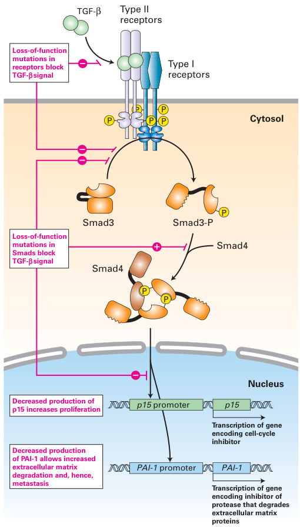
| Smad3-P | 磷酸化Smad3 |
| Type I receptors | I型受体 |
| Type II receptors | II型受体 |
| Cytosol | 胞质 |
| Nucleus | 细胞核 |
| p15 promoter | p15启动子 |
| PAI-1 promoter | PAI-1启动子 |
| Loss-of-function mutations | 功能丧失性突变 |
调控凋亡的基因可作为原癌基因或抑癌基因发挥功能
在正常发育过程中，许多细胞被指定进行程序性细胞死亡，也称为凋亡（见第21章）。许多异常情况都能触发凋亡，包括有丝分裂错误、DNA损伤，或是对构建一个有功能的器官并非必需、却异常过多的细胞。对某些细胞而言，凋亡似乎是默认状态，需要有信号才能确保细胞存活。细胞可以接收到存活的指令和死亡的指令，一个复杂的调控系统整合这些不同种类的信息。
如果细胞在该死亡时不死亡，反而持续增殖，就可能形成肿瘤。例如，慢性淋巴细胞白血病（CLL）的发生就是因为细胞在该死亡时却存活下来。这些细胞缓慢积累，大多数并不活跃分裂，但它们不死亡。CLL细胞具有染色体易位，激活一个称为BCL2的基因，我们现在知道它是凋亡的关键阻断者（见图21-38）。由此产生的BCL2蛋白不当过量，阻止了正常的凋亡，使这些肿瘤细胞得以存活。因此CLL肿瘤可归因于细胞死亡的失败。另有十余个通常参与负向调节凋亡的原癌基因被发现发生突变而成为癌基因。其编码蛋白的过量产生会阻止凋亡，即使是在需要凋亡来阻止癌细胞生长的时候也是如此。
相反，其蛋白产物刺激凋亡的基因则表现为抑癌基因。一个例子是第16章讨论过的PTEN基因。该基因编码的磷酸酶使磷脂酰肌醇3,4,5-三磷酸去磷酸化，后者是一种参与AKT激活的第二信使（见图16-29）。缺乏PTEN磷酸酶的细胞中，磷脂酰肌醇3,4,5-三磷酸和活性AKT的水平升高，而AKT促进细胞存活、生长和增殖，并通过若干条通路阻止凋亡。因此，PTEN通过降低AKT的抗凋亡和促增殖效应，发挥促凋亡抑癌基因的作用。
在人类癌症中最常见的促凋亡抑癌基因是p53。在受p53激活的基因中，有几个编码BAX等促凋亡蛋白（见图21-38）。正如我们将在24.5节讨论的，当细胞遭受广泛的DNA损伤或许多其他胁迫（如缺氧）时，p53诱导的促凋亡蛋白表达会导致它们迅速死亡。虽然凋亡看上去像是对DNA损伤的一种剧烈反应，但它能阻止那些很可能积累多个突变的细胞增殖。当p53功能丧失时，凋亡无法被诱导，而发生和发展癌症所需的突变积累就变得更有可能。
- 使生长因子受体在缺乏其正常配体时即可二聚化的突变，会导致受体的组成性活性（见图24-20）。生长因子受体的过量产生可产生同样的效应，并导致细胞异常增殖。
- 大多数肿瘤细胞产生一种或多种胞内信号转导蛋白的组成性活跃形式，从而在缺乏正常生长因子时仍产生促生长信号（见图24-21）。
- 核转录因子（如FOS、JUN和MYC）的不当产生可诱导转化。在伯基特淋巴瘤细胞中，MYC被易位到靠近某个抗体基因的位置，导致MYC过量产生（见图24-23）。
- 许多调节正常发育过程的基因编码在各种信号通路中发挥作用的蛋白。它们在调节生长发生的地点与时间方面的正常作用，反映在这些基因突变时所产生肿瘤的特征上。
- 由负向生长调节因子TGF-β介导的信号丢失，会促进细胞增殖和恶性肿瘤的发生（见图24-24）。
- 抗凋亡基因的过表达或促凋亡基因的丢失会促进肿瘤发生。促凋亡基因p53在癌症中经常发生突变。
24.5 癌症中细胞周期与基因组维护通路的失调
调控真核细胞周期的复杂机制是致癌突变的主要靶点。正向和负向作用的蛋白都精确控制着细胞进入细胞周期及其在细胞周期中的推进。此外，细胞还具有监视机制——称为检查点通路——以确保细胞在上一个时相正确完成之前不会进入细胞周期的下一个时相。例如，DNA已受损的细胞通常会在其DNA复制之前、或在G2期染色体分离之前被阻滞。这种细胞周期阻滞为DNA损伤的修复留出时间；或者，细胞被导向通过凋亡而自杀。细胞周期控制与检查点系统的功能是防止细胞癌变。正如所料，该系统中的突变往往导致发育异常或促进癌症。
本节中，我们讨论癌症中受影响的细胞周期检查点通路。我们首先描述控制细胞周期进入的检查点通路在大多数人类癌症中如何被突变和失调。然后我们讨论p53如何通过帮助细胞对DNA损伤作出应答来防止肿瘤发生。最后，我们讨论DNA修复酶的缺陷如何通过损害细胞修复DNA损伤的能力而促进癌症。
促进G1期向S期不受调控通过的突变具有致癌性
一旦细胞越过G1期的某个点——称为限制点——它便不可逆地承诺进入S期并复制其DNA（见图19-12）。细胞周期蛋白D（cyclin D）、细胞周期蛋白依赖性激酶（CDK）和Rb蛋白都是调控通过限制点的控制系统中的元件。
据估计，控制细胞周期进入的通路在约80%的人类癌症中失调。该通路的核心是cyclin D-CDK4/6复合物和转录抑制因子RB（图24-25）。cyclin D基因的表达由许多细胞外生长因子（即促分裂原）诱导。这些细胞周期蛋白与伙伴CDK4或CDK6组装，生成具有催化活性的cyclin-CDK复合物，其激酶活性促进G1期的推进。在通过限制点之前撤除促分裂原，会导致两种CDK抑制因子积累。如第19章所述，这两种蛋白p15和p16与cyclin D–CDK4/6复合物结合并抑制其活性，从而引起G1期阻滞。转录抑制因子RB受cyclin D–CDK4/6磷酸化的调控。未磷酸化的RB与E2F转录因子结合，后者刺激编码DNA合成所需蛋白的基因转录。在正常情况下，RB蛋白的磷酸化由有活性的cyclin D–CDK4/6复合物在G1期中期启动。RB的磷酸化在G1期晚期由cyclin E–CDK2复合物完成，从而使E2F释放并激活以及从G1期向S期推进。RB的完全磷酸化及其与E2F的解离，使细胞不可逆地承诺进行DNA合成。
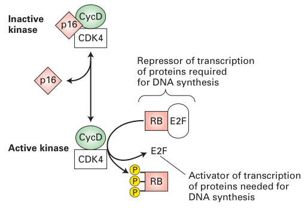
| CycD | 细胞周期蛋白D |
| Active kinase | 有活性激酶 |
| Inactive kinase | 无活性激酶 |
| Repressor of transcription of proteins required for DNA synthesis | 抑制DNA合成所需蛋白转录的阻遏物 |
| Activator of transcription of proteins needed for DNA synthesis | 激活DNA合成所需蛋白转录的激活因子 |
大多数肿瘤都含有一种致癌突变，它导致控制S期进入通路中某一组分的过量产生或丢失，从而使细胞在缺乏适当细胞外生长信号的情况下被推入S期。例如，在许多人类癌症中都发现cyclin D1（三种cyclin D之一）水平升高。在产生抗体的B淋巴细胞的某些肿瘤中，cyclin D1基因发生易位，使其转录处于抗体基因增强子的控制之下，从而导致整个细胞周期中cyclin D1的生成升高，且与细胞外信号无关。（这一现象类似于前面讨论过的伯基特淋巴瘤细胞中的MYC易位。）cyclin D1能够作为癌蛋白发挥作用，这一点已由转基因小鼠研究证明：在该研究中，cyclin D1基因被置于乳腺导管细胞特异性增强子的控制之下。起初，导管细胞发生过度增殖，最终这些转基因小鼠中长出乳腺肿瘤。导致cyclin D过量产生的第二种机制是基因扩增。cyclin D1基因的扩增及随之而来的cyclin D1蛋白过量产生在人类乳腺癌中很常见；多余的cyclin D1有助于驱动细胞通过细胞周期。
我们已经看到，两个RB等位基因的失活突变会导致儿童视网膜母细胞瘤，这是一种相对罕见的癌症。然而，RB基因功能的丧失也见于成年后发生的更常见癌症（如肺、乳腺和膀胱的癌）。与视网膜组织不同，这些组织可能产生其他蛋白（如p107和p130，二者在结构上与RB相关），其功能与RB冗余，因此RB在这些组织中对于预防癌症并不那么关键。然而在视网膜中，细胞周期进入的调控似乎完全依赖RB蛋白，这就是为什么RB基因杂合的患者首先在该组织中发生肿瘤。RB的功能不仅可被失活突变消除，还可被一种抑制性蛋白的结合所消除，该蛋白称为E7，由人乳头瘤病毒（HPV）编码——这是病毒制造产毒组织的又一卑劣伎俩。目前，已知这种结合仅发生在宫颈癌和口咽癌中。
作为cyclin-CDK抑制因子发挥作用的蛋白在调控细胞周期中起重要作用。特别是，使p16无法抑制cyclin D–CDK4/6激酶活性的功能丧失性突变在若干人类癌症中很常见。如图24-25所示，p16的缺失模拟了cyclin D过量产生的效应。因此p16通常作为抑癌基因发挥作用。虽然p16抑癌基因在某些人类癌症中被缺失，但在另一些癌症中p16序列是正常的。在后一类癌症的某些类型（如肺癌）中，p16基因或编码其他功能相关蛋白的基因，因其启动子区的高甲基化而失活，从而阻止其转录。是什么促成p16甲基化的这一改变尚不清楚，但它阻止了这一重要细胞周期调控蛋白的产生。
编码p16的基因座极不寻常，因为它编码的抑癌基因不少于三个，这使它成为人类基因组中最易受致癌性改变影响的基因座。除了含有编码p16的基因INK4a（CDKN2A）外，它还在紧邻上游具有INK4b（CDKN2B）基因座，后者编码p15——另一种cyclin D–CDK4/6抑制因子（图24-26）。此外，该基因座还编码抑癌蛋白p53的一个关键激活因子。这种蛋白p14ARF（小鼠中为p19ARF）由第一个INK4a外显子上游的一个外显子编码，并与INK4a共享其外显子2和外显子3。正如我们接下来将看到的，这种蛋白控制p53的稳定性。因此，该基因座中的突变可同时影响细胞中两条主要的抑癌通路，即RB通路和p53通路。
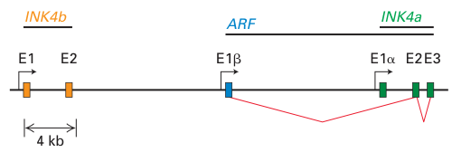
| E1β | E1β外显子 |
| E2 | E2外显子 |
| E3 | E3外显子 |
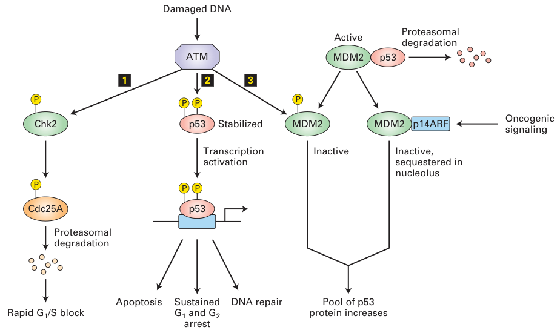
| Damaged DNA | 受损DNA |
| Oncogenic signaling | 致癌信号 |
| Proteasomal degradation | 蛋白酶体降解 |
| Rapid G1/S block | G1/S期快速阻滞 |
| Sustained G1 and G2 arrest | 持续的G1期和G2期阻滞 |
| Inactive, sequestered in nucleolus | 无活性，被隔离在核仁中 |
| DNA repair | DNA修复 |
| Apoptosis | 凋亡 |
p53的丢失使DNA损伤检查点失效
p53蛋白是肿瘤发生过程中的核心角色。据认为，大多数（即使不是全部）人类肿瘤都在p53本身、或在调控p53活性的蛋白中带有突变。具有功能性p53的细胞在受到损伤DNA的照射时会在G1期被阻滞，而缺乏功能性p53的细胞则不会。与其他细胞周期蛋白不同，p53在正常细胞中含量极低，因为它极不稳定并被快速降解。缺乏p53的小鼠基本能够存活且健康，只是易患多种类型的肿瘤。
在正常小鼠中，p53蛋白的含量仅在应激情况下——如暴露于紫外线或γ射线照射、热或缺氧——才会升高，这是一种转录后应答。γ射线照射会在DNA中造成损伤。丝氨酸激酶ATM或ATR被招募到这些损伤位点并被激活。随后它们磷酸化p53蛋白N端的一个丝氨酸残基。这种磷酸化使该蛋白逃避泛素介导的降解，导致其浓度显著升高（图24-27）。
被稳定的p53激活编码p21的基因的转录，p21结合并抑制哺乳动物cyclin E-CDK2。结果，DNA受损的细胞被阻滞在G1期，为第5章所讨论的机制进行DNA修复留出时间，或者被永久阻滞——即进入衰老。然而，p53的活性并不限于诱导细胞周期阻滞。此外，这种多用途的抑癌蛋白还刺激促凋亡蛋白（我们稍后将看到）和DNA修复酶的产生（见图24-27）。衰老和凋亡实际上可能是p53阻止肿瘤生长最重要的途径。
p53的活性通常由一种称为MDM2的蛋白维持在低水平。当MDM2与p53结合时，它抑制p53的转录激活能力，同时由于其具有E3泛素连接酶活性，催化p53的泛素化，从而将其导向蛋白酶体降解。ATM或ATR对p53的磷酸化使结合的MDM2从p53上脱落，从而稳定p53。由于MDM2基因本身由p53转录激活，MDM2与p53构成一个自身调节反馈环，也许正常情况下可防止p53功能过度。MDM2基因在许多肉瘤和其他含正常p53基因的人类肿瘤中发生扩增。即使这类肿瘤细胞产生有功能的p53，升高的MDM2水平也足以降低p53浓度，从而消除p53在照射应答中诱导的G1期阻滞。MDM2的一个关键调控因子是p14ARF蛋白，它由那个同时也编码INK4蛋白的多重抑癌基因座编码。p14ARF蛋白与MDM2结合并将其隔离在核仁中，使其无法接近p53。组织中正常的p14ARF水平极低，几乎检测不到该蛋白——否则它会导致p53积累，从而引起细胞周期阻滞或凋亡。然而，在响应致癌信号时——即在存在高水平促增殖信号时——p14ARF的转录由E2F转录因子诱导。因此p14ARF是肿瘤发生的重要抑制因子，因为当促增殖信号通过信号通路中的过度激活突变达到非生理性的高水平时，它会诱导p53激活。促增殖信号通路若要像癌症中那样引起不受控制的增殖，这种p53上调就不能发生。因此，p53在大多数人类肿瘤中失活——或是由于p53本身功能丧失，或是由于p14ARF等p53功能正调控因子下调，或是由于MDM2等p53负调控因子上调——也就不足为奇了。
p53的活性还被一种称为E6的人乳头瘤病毒（HPV）蛋白所抑制。HPV编码两种蛋白，它们有助于HPV在多种培养细胞中诱导稳定转化和有丝分裂的能力。这两种蛋白E6和E7分别结合并抑制p53和RB抑癌蛋白。E6和E7共同作用，就足以在细胞增殖调控蛋白没有突变的情况下诱导转化。
p53的活性形式是由四个相同亚基组成的四聚体。细胞中两个p53等位基因之一的错义点突变，就能废除几乎所有的p53活性，因为几乎所有寡聚体都至少含有一个有缺陷的亚基，而这种寡聚体激活转录的能力降低。因此，致癌性p53突变以显性负性方式起作用，即单个突变的等位基因就导致功能丧失。这种功能丧失并不完全，因此为了生长得更快，肿瘤细胞有时仍会丢失剩下的那个有功能的等位基因（杂合性丢失）。正如我们在第6章中学到的，显性负性突变可发生在活性形式为多聚体、或其功能依赖于与其他蛋白相互作用的蛋白中。相反，其他抑癌基因（如RB）中的功能丧失性突变是隐性的，因为所编码的蛋白以单体形式发挥功能，单个等位基因的突变几乎没有功能后果。
p53蛋白是抵御致癌性转化的关键防御机制。最能说明这一点的是，p53基因的功能丧失性突变出现在50%以上的人类癌症中。p53保护我们免受什么？与防止不当增殖的Rb不同，p53守护细胞免受遗传改变。当p53的G1期检查点控制不能正常运作时，受损的DNA可以复制，产生突变和DNA重排，这些改变被传递给子代细胞，使其更可能转变为转移性细胞。例如，p53功能丧失会导致基因扩增频率增加一百倍或更多。同时，p53功能丧失会阻止凋亡，促进转化细胞的演化。由于其在防止肿瘤发生中的核心作用，研究人员正在大力寻找能够恢复p53功能的化合物，作为治疗广谱人类肿瘤的新途径。
DNA修复系统的丧失可导致癌症
如我们前面的讨论所示，导致抑癌蛋白功能失常和癌蛋白产生的DNA改变是大多数癌症的根本原因。关键生长与细胞周期调控基因中的这些致癌突变包括插入、缺失和碱基替换，以及染色体扩增和易位。DNA修复系统的损伤（见第5章）导致这些遗传改变的发生率升高。在DNA修复机制有缺陷的细胞中积累的许多突变里，有些影响细胞周期调控因子，有些影响细胞黏附，还有些影响穿过基底膜迁移的能力——本章开头已讨论过。积累了这类突变的细胞可能发生癌变。此外，某些DNA修复机制本身易于出错（见图6-37）。这些错误也促进肿瘤发生。肿瘤细胞无法维持基因组完整性，导致形成异质性的恶性细胞群体。因此，针对单个基因、甚至一组基因的化疗，很可能无法消灭所有恶性细胞。这一问题使人们对干扰肿瘤血液供应、靶向非整倍体细胞、或以其他方式作用于多种类型肿瘤细胞的疗法更感兴趣。
正常分裂的细胞通常采用若干机制来防止可能致癌的有害突变积累。干细胞防止突变的一种保护形式是其相对较低的分裂速率，这减少了DNA复制和有丝分裂过程中发生DNA损伤的可能性。此外，干细胞的后代不具备无限分裂的能力。经过若干轮分裂后，它们退出细胞周期，从而减少了突变诱导的细胞分裂失调与危险肿瘤相关的可能性。此外，如果肿瘤要生长、吸引血液供应、侵袭邻近组织并转移需要多个突变，那么低复制速率加上正常的低突变率（10−9）就提供了进一步抵御癌症的屏障。然而，如果有强力的诱变剂到达细胞，或者DNA修复受损而突变率升高，这些保障就可能被突破。当具有干细胞样生长特性的细胞被环境毒物诱变，且无法有效修复损伤时，癌症就可能发生。
即使不接触任何外源性致癌物或诱变剂，正常的生物学过程也会产生大量DNA损伤。这种损伤源于脱嘌呤反应、烷基化反应，以及氧自由基等活性物质的产生，这些都会改变DNA。据估计，每个细胞中每天有超过20,000处DNA改变由活性氧物质和脱嘌呤造成。因此，DNA修复是抵御遗传改变、进而抵御癌症的关键防御系统。
| 疾病 | 受累的DNA修复系统 | 敏感性 | 癌症易感性 | 症状 |
|---|---|---|---|---|
| 预防点突变、插入和缺失 | ||||
| 遗传性非息肉性结直肠癌 | DNA错配修复 | 紫外线照射、化学诱变剂 | 结肠、卵巢 | 肿瘤的早期发生 |
| 着色性干皮病 | 核苷酸切除修复 | 紫外线照射、点突变 | 皮肤癌、黑色素瘤 | 皮肤和眼睛的光敏性、角化病 |
| 双链断裂的修复 | ||||
| Bloom综合征 | 通过同源重组修复双链断裂 | 温和的烷化剂 | 癌、白血病、淋巴瘤 | 光敏性、面部毛细血管扩张、染色体改变 |
| Fanconi贫血 | 通过同源重组修复双链断裂 | DNA交联剂、活性氧化剂 | 急性髓系白血病、鳞状细胞癌 | 发育异常，包括不育和骨骼畸形；贫血 |
| 遗传性乳腺癌、BRCA1和BRCA2缺陷 | 通过同源重组修复双链断裂 | 乳腺癌和卵巢癌 | 乳腺癌和卵巢癌 | |
数据来源：改编自 A. Kornberg 与 T. Baker，1992，DNA Replication，第2版，W. H. Freeman and Company，第788页；J. Hoeijmakers，2001，Nature 411:366；以及 L. Thompson 与 D. Schild，2002，Mutat. Res. 509:49。
基因组维护基因的正常作用是防止或修复DNA损伤。第5章所述高保真DNA修复系统的丧失与癌症风险增加相关。例如，遗传了编码关键错配修复或切除修复蛋白的基因突变的人，罹患某些癌症的可能性大大增加（表24-2）。没有适当的DNA修复，着色性干皮病（XP）或遗传性非息肉性结直肠癌（HNPCC，又称Lynch综合征）患者倾向于在许多其他基因中积累突变，包括那些对控制细胞生长和增殖至关重要的基因。XP使患者发生皮肤癌的几率约为正常人的一千倍。已知的八个XP基因中有七个编码切除修复机器的组分；在缺乏这种修复机制的情况下，控制细胞周期或以其他方式调控细胞生长和死亡的基因会发生突变。HNPCC基因编码错配修复系统的组分，这些基因的突变见于20%的散发性结肠癌中。这类癌症从良性息肉发展为成熟肿瘤的速度比通常快得多，推测是因为最初的癌细胞在没有修复的情况下持续发生错配诱变。
由于缺乏错配修复而在结肠癌中频繁突变的一个基因，编码TGF-β的II型受体（见图24-24）。编码该受体的基因含有一串连续10个腺嘌呤的序列。由于复制过程中DNA聚合酶的"滑移"，该序列常常突变为含9个或11个腺嘌呤的序列。如果该突变未被错配修复系统修正，蛋白编码序列中随之产生的移码就会废除正常受体蛋白的产生。如前所述，这类失活突变使细胞对TGF-β的生长抑制产生抗性，从而促成这些肿瘤特有的不受调控的生长。这一发现证明了错配修复在纠正否则可能导致细胞增殖失控的遗传损伤方面的重要性。
所有DNA修复机制都使用一个不同于标准复制型DNA聚合酶Pol α、Pol δ和Pol ε的DNA聚合酶家族来纠正DNA损伤。这些聚合酶中有九种，包括一种称为DNA聚合酶β的，能够利用含有DNA加合物和其他化学修饰、甚至缺失碱基的模板。这些酶被称为损伤旁路DNA聚合酶。该聚合酶家族的每个成员都具备应对特定类型DNA损伤的独特能力。想必这类聚合酶之所以被容忍，是因为有修复往往总比没有好。它们是最后手段的聚合酶，是在更常规、更准确的聚合酶无法起作用时使用的酶，它们执行的是诱变性的复制过程。DNA Pol β没有校对功能，并在某些肿瘤中过表达，也许是因为面对不断增加的突变负担，细胞要能够分裂就需要高水平的它。易出错的修复系统被认为介导了化学物质和辐射的大部分（即便不是全部）致癌效应，因为只有在修复之后才存在可遗传的突变。越来越多的证据表明，DNA Pol β的突变与肿瘤相关。在检查的189个肿瘤中，58个带有DNA Pol β基因突变，而这些突变大多既不见于同一患者的正常组织，也不属于不同个体中所见的正常突变谱。在小鼠细胞中表达其中两种突变型聚合酶，会使细胞以转化后的形态生长并具有形成病灶的能力。
双链断裂是特别严重的损伤，因为DNA双链的错误重新连接可导致严重的染色体重排和易位，例如产生杂合基因、或使某个生长调控基因置于不同启动子或增强子的控制之下。这类损伤的修复往往依赖以同源染色体作为向导（见图6-39）。免疫系统的B细胞和T细胞特别容易发生由其免疫球蛋白或T细胞受体基因重排过程中产生的双链断裂所引起的DNA重排，这解释了这些基因座为何频繁涉及白血病和淋巴瘤。BRCA1和BRCA2——与人类乳腺癌和卵巢癌相关的基因——编码DNA断裂修复系统的重要组分。缺乏任一BRCA功能的细胞无法修复以同源染色体提供修复模板的DNA。
- 编码cyclin D1的原癌基因过表达，或编码p16和RB的抑癌基因丢失，都可导致不恰当地、不受调控地通过限制点。这类异常见于80%的人类肿瘤。
- INK4-ARF基因座是人类最常突变的抑癌基因座，它同时控制RB通路和p53通路。
- p53蛋白是一种多功能的抑癌蛋白，在响应DNA损伤时促进G1期阻滞和DNA修复或凋亡。
- p53基因的功能丧失性突变出现在50%以上的人类癌症中。MDM2（一种通常抑制p53活性的蛋白）的过量产生，或p14ARF（它也会增加MDM2活性）的失活，见于若干表达正常p53蛋白的癌症中。因此，p53应激反应通路以某种方式被失活，从而允许肿瘤生长。
- 人乳头瘤病毒（HPV）编码两种致癌蛋白：抑制p53的E6和抑制RB的E7。
- 基因组维护基因编码修复DNA、或在DNA损伤确实发生时以其他方式维持染色体完整性的酶。基因组维护基因中的突变导致基因组的高频率诱变，这可引起细胞增殖失控和更多突变的积累，最终进展为转移性癌症。
- 在某些人类疾病中发现的DNA修复过程的遗传性缺陷，与某些癌症的易感性增加相关。
访问LaunchPad可获取学习工具并进一步了解本章内容：展望未来、经典实验24-1"ras癌基因的鉴定"、分析数据，以及包括视频、动画和测验在内的附加学习工具。
关键术语
复习题
- 1.尽管起源各不相同，癌细胞仍具有若干共同特征，使其与正常细胞区分开来。请描述这些特征。
- 2.哪些特征可区分良性肿瘤与恶性肿瘤？
- 3.肿瘤细胞的哪一个重要特征是由Otto Warburg发现的？
- 4.由于对氧气和营养物质的需求，组织中的细胞必须位于血管100 μm范围之内。基于这一信息，解释为什么许多恶性肿瘤常在下列某一个基因中带有功能获得性突变：βFGF、TGF-α和VEGF。
- 5.癌症死亡的90%是由转移性肿瘤而非原发瘤引起的。请给转移下定义。解释下列新型癌症疗法的原理：(a) batimastat，一种基质金属蛋白酶和纤溶酶原激活物受体的抑制剂；(b) 阻断整联蛋白功能的抗体——整联蛋白是介导细胞黏附于基底膜及各种组织细胞外基质的整合膜蛋白。
- 6.上皮-间质转化（EMT）在转移过程中有何重要性？
- 7.什么假说能解释人类癌症发病率随年龄呈指数增长这一观察结果？请举一例能证实该假说的数据。
- 8.区分原癌基因与抑癌基因。原癌基因和抑癌基因要变得促癌，发生的是功能获得性突变还是功能丧失性突变？将下列基因归类为原癌基因或抑癌基因：p53、ras、BCL-2、JUN、MDM2和p16。
- 9.描述基因组维护因子中的突变如何促进肿瘤发生。为什么错配修复基因失活会导致结肠癌？
- 10.遗传性视网膜母细胞瘤通常累及患儿的双眼，而散发性视网膜母细胞瘤通常只在成年期累及单眼。解释这两种形式视网膜母细胞瘤之间流行病学差异的遗传学基础。解释以下表面上的悖论：抑癌基因的功能丧失性突变以隐性方式起作用，但遗传性视网膜母细胞瘤却以常染色体显性方式遗传。
- 11.解释杂合性丢失（LOH）的概念。为什么大多数癌细胞会表现一个或多个基因的杂合性丢失？纺锤体组装检查点失效如何导致杂合性丢失？
- 12.许多恶性肿瘤的特征是一个或多个生长因子受体的激活。EGF受体等跨膜生长因子受体具有什么催化活性？描述使HER2受体跨膜区内的一个缬氨酸变为谷氨酰胺的点突变如何导致相应生长因子受体的激活。
- 13.描述编码RAS和NF-1的基因中促癌突变所干扰的共同信号转导事件。为什么RAS突变在癌症中比NF-1突变更常见？
- 14.描述在伯基特淋巴瘤中产生MYC癌基因的突变事件。为什么产生致癌性MYC的这一特定机制导致淋巴瘤而非其他类型的癌症？描述产生致癌性MYC的另一种机制。
- 15.胰腺癌常在编码Smad4蛋白的基因中带有功能丧失性突变。这一突变如何促进胰腺肿瘤中所见的生长抑制丧失与高度转移表型？
- 16.为什么INK4基因座的突变如此危险？
- 17.解释表观遗传改变如何促进肿瘤发生。
- 18.若干株人乳头瘤病毒（HPV）可导致宫颈癌。这些致病株产生三种有助于宿主细胞转化的蛋白。这三种病毒蛋白是什么？描述每一种与它的宿主靶蛋白如何相互作用。
- 19.大多数人类肿瘤中都会发生p53功能丧失。说出p53功能丧失促成恶性表型的两种方式。解释苯并(a)芘如何导致p53功能丧失。
参考文献
引言
Weinberg, R. A. 2006. The Biology of Cancer. Garland Science.
肿瘤细胞与正常细胞的差异
De Bock, K., M. Mazzone, and P. Carmeliet. 2011. Antiangio- genic therapy, hypoxia, and metastasis: risky liaisons, or not? Nat. Rev. Clin. Oncol. 8(7):393–404.
Desgrosellier, J. S., and D. A. Cheresh. 2010. Integrins in can- cer: biological implications and therapeutic opportunities. Nat. Rev. Cancer10(1):9–22.
Giancotti, F. G. 2013. Mechanisms governing metastatic dor- mancy and reactivation. Cell155(4):750–764.
Grivennikov, S. I., F. R Greten, and M. Karin. 2010. Immunity, inflammation, and cancer. Cell140(6):883–899.
Hanahan, D., and R. A. Weinberg. 2011. Hallmarks of cancer: the next generation. Cell144:646–674.
Joyce, J. A., and J. W. Pollard. 2009. Microenvironmental regu- lation of metastasis. Nat. Rev. Cancer9(4):239–252.
Korbel, J. O., and P. J. Campbell. 2013. Criteria for inference of chromothripsis in cancer genomes. Cell152(6):1226–1236.
Nguyen, D. X., P. D. Bos, and J. Massagué. 2009. Metastasis: from dissemination to organ-specific colonization. Nat. Rev. Cancer 9(4):274–284.
Pfau, S. J., and A. Amon. 2012. Chromosomal instability and aneuploidy in cancer: from yeast to man. EMBO Rep.13(6):515– 527.
Sethi, N., and Y. Kang. 2011. Unravelling the complexity of metastasis—molecular understanding and targeted therapies. Nat. Rev. Cancer11(10):735–748.
Thiery, J. P., et al. 2009. Epithelial-mesenchymal transitions in development and disease. Cell139(5):871–890.
Vander Heiden, M. G., L. C. Cantley, and C. B. Thompson. 2009. Understanding the Warburg effect: the metabolic require- ments of cell proliferation. Science324(5930):1029–1033.
癌症的起源与发展
Heyer, J., et al. 2010. Non-germline genetically engineered mouse models for translational cancer research. Nat. Rev. Cancer 10:470–480.
Khaled, W. T., and P. Liu. 2014. Cancer mouse models: past, present and future. Semin. Cell Dev. Biol. 27:54–60.
Kinzler, K. W., and B. Vogelstein. 1996. Lessons from heredi- tary colorectal cancer. Cell87:159–170.
Loechler, E. L. 2002. Environmental carcinogens and mutagens. In Encyclopedia of Life Sciences. Nature Publishing.
Wogan, G. N., et al. 2004. Environmental and chemical carci- nogenesis. Semin. Cancer Biol.14:473–486.
癌症的遗传学基础
Dawson, M. A., and T. Kouzarides. 2012. Cancer epigenetics: from mechanism to therapy. Cell150(1):12–27.
Garraway, L. A., and E. S. Lander. 2013. Lessons from the cancer genome. Cell153(1):17–37.
Grisendi, S., and P. P. Pandolfi. 2005. Two decades of cancer genetics: from specificity to pleiotropic networks. Cold Spring Harb. Symp. Quant. Biol. 70:83–91.
Lujambio, A., and S. W. Lowe. 2012. The microcosmos of cancer. Nature482(7385):347–355.
Morrow, P. K., and G. N. Hortobagyi. 2009. Management of breast cancer in the genome era. Annu. Rev. Med. 60:153–165.
Sellers, W. R. 2011. A blueprint for advancing genetics-based cancer therapy. Cell147(1):26–31.
Vogelstein, B., et al. 2013. Cancer genome landscapes. Science 339:1546–1558. doi: 10.1126/science.1235122.
癌症中细胞生长与死亡通路的失调
Cotter, T. G. 2009. Apoptosis and cancer: the genesis of a research field. Nat. Rev. Cancer9(7):501–507.
Dang, C. V. 2012. MYC on the path to cancer. Cell149(1):22– 35.
Holderfield, M., et al. 2014. Targeting RAF kinases for cancer therapy: BRAF-mutated melanoma and beyond. Nat. Rev. Cancer 14(7):455–467.
Jiang, J., and C. Hui. 2008. Hedgehog signaling in development and cancer. Dev. Cell15(6):801–812.
Pickup, M., S. Novitskiy, and H. L. Moses. 2013. The roles of TGFβ in the tumour microenvironment. Nat. Rev. Cancer 13(11):788–799.
Pylayeva-Gupta, Y., E. Grabocka, and D. Bar-Sagi. 2011. RAS oncogenes: weaving a tumorigenic web. Nat. Rev. Cancer 11(11):761–774.
Shaulian, E., and M. Karin. 2002. AP-1 as a regulator of cell life and death. Nature Cell Biol.4:E131–E136.
Shaw, A. T., et al. 2013. Tyrosine kinase gene rearrangements in epithelial malignancies. Nat. Rev. Cancer13(11):772–787.
癌症中细胞周期与基因组维护通路的失调
Bieging, K. T., S. S. Mello, and L. D. Attardi. 2014. Unravelling mechanisms of p53-mediated tumour suppression. Nat. Rev. Cancer 14(5):359–370.
Bunting, S. F., and A. Nussenzweig. 2013. End-joining, translo- cations and cancer. Nat. Rev. Cancer13(7):443–454.
Burkhart, D. L., and J. Sage. 2008. Cellular mechanisms of tumour suppression by the retinoblastoma gene. Nat. Rev. Cancer 8(9):671–682.
Curtin, N. J. 2012. DNA repair dysregulation from cancer driver to therapeutic target. Nat. Rev. Cancer12(12):801–817.
Daley, J. M., and P. Sung. 2014. 53BP1, BRCA1, and the choice between recombination and end joining at DNA double-strand breaks. Mol. Cell Biol.34(8):1380–1388.
Jiricny, J. 2006. The multifaceted mismatch-repair system. Na- ture Rev. Mol. Cell Biol. 7:335–346.
Malumbres, M., and M. Barbacid. 2001. To cycle or not to cycle: a critical decision in cancer. Nat. Rev. Cancer1:222–231.
Manning, A. L., and N. J. Dyson. 2012. RB: mitotic implica- tions of a tumour suppressor. Nat. Rev. Cancer12(3):220–226.
Moody, C. A., and L. A. Laimins. 2010. Human papillomavi- rus oncoproteins: pathways to transformation. Nat. Rev. Cancer 10(8):550–560.